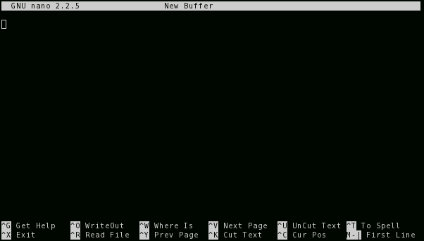
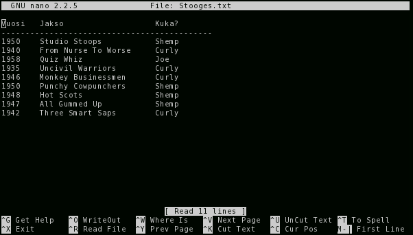
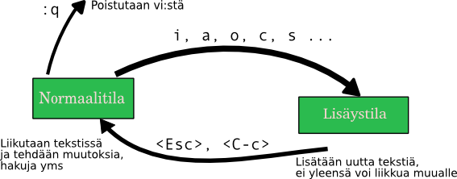

Thinking in Text
Sisällysluettelo
- Thinking in Text
Unix-käytön perusteita ihmisille, jotka haluavat shell-yhteyksistään irssiä enemmän irti. Kirjoitin tämän joskus. Oletettavasti vuonna 2009 valmistui. Nauttikaa.
Esittely
- Ville
- Päähenkilömme, joka on juuri saanut shell-tunnuksen, eikä oikein tiedä, mitä kaikkea sillä tehdä.
- Hemmo-Joachim
- Aloitteleva noobi. Koodailee PHP:tä ja Pythonia vapaa-ajallaan. Koulussa opetetaan Javaa.
- Matias
- Unix-parta. Elää komentorivillä ja tekee kaikesta hakkeritaidetta. Ei oikein pidä Windowsista.
- Karl
- Koira. Saksanpaimen.
Esimerkkimme Ville kenties tarvitsee shell-käytön alkeita päästäkseen irkkailemaan, ja hänpä myös kuuleman mukaan tarvitsee vähän sivutilaa koulutöiden harjoittelemiseen. Saammepa nähdä, miten hän suhtautuu uuteen palveluunsa.
Hemmo-Joachim on ehkä keltanokka, mutta into ja halu oppia on kova. Hän on Ubuntu-saarnaajia, vaikka se Seiska onkin turvallisen dualbootin päässä. Pelihimon lietsontaan hän kuulema Ubuntua käyttää. Mehän tiedämmekin paremmin.
Ja pitäähän joukossa olla yksi taitajakin. Nimeksi olemme gurullemme valinneet Matiaksen: hän tuntee tiensä mustavalkoisissa terminaaliviidakoissa, muistaa ANSI-koodit unissaankin ja seuraa linux-kernelin kehitystä viikkokirjein ja postituslistoin aktiivisesti. Vapaa-ajallaan hän nauttii shakin pelaamisesta ja väittelee finet-nyysseissä aina kun joku toinen sinne eksyy.
Alkusanat
Tässä oppaassa keskitymme tarkastelemaan tekstipohjaisen komentorivin erikoisuuksia, sekä joitain usein käytettyjä ohjelmia, joita voi etänä käytellä mistä vain. Jos oikein malttaa lukea, vähintäänkin oppii ymmärtämään, miksi se graafinen hiirellä klikkailu ei ole kaikkien mielestä välttämätöntä päivittäisten askareiden hoitamiseksi. Valitsin otsikoksi (tai työnimeksi, mikäli se siitä vaihtuu) juuri tuon nimen, koska niin paljon tätä komentorivifilosofiaa kiteytyy kaiken tiedon puhtaaseen tekstipresentaatioon. Mikään Word-muotoilu tai OpenOffice-grafiikka ei korvaa sitä seikkaa, että puhtaana tekstinä datasi on turvassa ja sitä voi käsitellä ennennäkemättömän monella eri ohjelmalla.
Mikäli tämän jälkeen jää vielä kaipaamaan enemmän, eikä oppaasta ole jäänyt etovaa makua suuhun, on Eric Raymondin The Art of Unix Programming hyvä valinta jatkaa matkaansa kohti hakkerikulttuuria.
Oppaassa saatetaan vielä jatkossakin tehdä viittauksia Jürgen von Steinhugelin kirjoihiin, josta pahoittelen etukäteen.
Ensimmäinen yhteys
Ensimmäistä yhteyttään ei yleensä jännitä samalla tavalla kuin toista tai kolmatta yhteyttä. Ensimmäistä yhteyttä ottaessaan sitä lukee hyvin mielin tutoriaaleja ja lähteitä, miten se oikein tehdään. Toisella kerralla sitä uskoo omaan muistikapasiteettiinsa vähän liikaa, ja sitten hermostuu, kun ei muistakaan seuraavaa askelta ulkomuistista.
- Ville
- Eli jos mä ymmärrän oikein, niin komennan
ssh ville@viuhka.fi? - Matias
- Polulle on monta reittiä. On valittava joskus oikean ja väärän välillä. Ymmärräthän, mitä olet komentamassa?
- Ville
- Sähköpostissa on samanlainen skeema. Tunnus on
villeja palvelin onviuhka.fi.Puttyssä sitten vastaavasti tunnus ja palvelin laitetaan haluttuihin kohtiin.
Tietenkään, se ei ole ssh mitä ihmiset jännittävät. Se on vain
väline päästä käsiksi Unix-shelliin. Shell, tuo komentorivien valtias.
Shell on ohjelma, joka tavallisesti ottaa vastaan tekstiä käyttäjältä,
ja suorittaa muita ohjelmia sitten annetun syötteen mukaan. Shell on
ensimmäisten päätetietokoneiden myötä syntynyt batch-henkinen tapa
vuorovaikuttaa tietokoneiden kanssa.
- Ville
- Ööh, eli mikä toi bäts on?
- Matias
- Annat syötteen koneelle kokonaisuudessaan, ja kone ajaa sen. Sen jälkeen voit komentaa lisää. Nykyisin on enemmän vuorovaikutteisista ohjelmista kyse, jossa jokainen tehtävä suunnitellaan yhdessä koneen ja käyttäjän kanssa, ja sitten lopuksi kone suorittaa sen.
- Ville
- Aha. Eikö se ole vähän kankeeta sitten?
- Matias
- Monissa hommissa ei tarvitse interaktiivisuutta. Niissä, joissa tarvitaan, on sitten interaktiiviset valikot sun muut.
Kaikilla käytännön tasoilla tarkasteltuna ssh-asiakasohjelmalla
(esimerkiksi Windows-ympäristössä PuTTy ja OpenSSH
Linux/Unix-maailmoissa; komentoriviltä ajettava ssh) yhteyden
ottaminen Unix-palvelimeen on samanlaista etäkäyttöä kuin vaikka
Windowsien etätyöpöydän ajaminen. Onneksi puhtaasta tekstistä
koostuvien konsoliohjelmien ajaminen on sujuvaa hitaammallakin
nettiyhteydellä, sekä rajoitetummistakin ympäristöistä, kuten
älypuhelimista onnistuu etäkäyttö.
Jos olet itse Linux-ympäristössä, kuten Ubuntussa, ei sinun tietenkään tarvitse ottaa ssh-yhteyksiä minnekään, vaan voit avata Terminaalin tai vastaavan, jolla voit tutustua komentorivin saloihin yhtä hyvin kuin etänäkin.
Hei Unix?
Mainittakoon, että puhumme tässä oppaassa Unixeista, vaikka oikeasti Linux ei edes ole tarkalleen ottaen Unix. Siis yksinkertaistetusti Linux on yksi Unix-variantti. Koska valtaosa, ellei kaikki, mitä tässä oppaassa opimme, toimii Linuxien lisäksi Unixeissa, niin puhun yleisemmällä tasolla Unix-käytöstä.
- Ville
- I'm in!
- Matias
- Hieno homma.
- Ville
- Mitä tässä voi nyt sitten tehdä? Kirjoittaa tekstiä ja odotella kun kone vastaa?
- Matias
- Ohjelma, jota siinä "ajat" tällä hetkellä, on se
kuuluisa shelli sitten. Todennäköisimmin shell
nimeltä
bash. Joskus kirjallisuudessa puhutaan kuoriohjelmista, mutta on se aika toivoton suomennos.
Shell-ohjelmia on monia, joista bash on ylivoimaisesti suosituin
tänä päivänä. Joskus saattaa nähdä myös vanhempaa csh-ohjelmaa
käytössä. Peruskäytössä jokainen toimii yhtä hyvin, ja erot eri
shellien välillä tulevat ilmi vasta monimutkaisempia skriptejä
kirjoitellessa. Nykyisin kaksi suositeltavinta shelliä kaikkeen
käyttöön ovat bash ja zsh, joita ylläpidetään ahkerasti. Tässä
vaiheessa ei tarvitse tietää muuta kuin se, että shell-ohjelma on oma
sovelluksensa, irti käyttöjärjestelmän ytimestä. Tiedät sitten sanoa,
että se on bash joka kenkkuilee, eikä linux.
- Matias
- Maistelepa komentorivin taikaa. Komennapa vaikka:
echo Hei Unix!
- Ville
- Kyllä minä nyt
echo:n tiedän. Ei sillä ole kyllä paljoa käyttöä. Tuossahan minä näen sen tekstin ilman enterin painamistakin! - Matias
- Echolla on käyttönsä esimerkiksi skriptatessa.
- Ville
- Pitääkös minun osata skriptausta? PHP ei ole vahvin lajini…
- Matias
- Kun osaat luovia komentorivillä, osaat samalla
skriptata. Voithan ottaa tästä vähän vaativamman
esimerkin:
echo Hei $USER
- Ville
- Se näyttää keksivän nimeni jostain. On se epeli tuo
echo. - Matias
- Paitsi että
echoei ole se fiksu osapuoli. Shellisi tekee muunnoksen kutsuvaiheessa, ja echo näkee vain tekstin "Hei ville" tulostettavaksi. - Ville
- Vai silleen.
- Matias
- Katsos, siten ei jokaisen pikkuohjelman tarvitse
itse ratkaista tuota
$USER:in merkitystä, vaan riittää että yksi ohjelma, shell, hoitaa sen.
Merkinnöistä
Ennen kuin voimme kunnolla alkaa matkaamme kohti Unix-herruutta, pitää meidän tietää, mistä puhutaan. Ja millä keinoin. Tässä oppaassa käytämme luultavasti melko epäyhtenäistä merkintätapaa erilaisille asioille, mutta käydään esimerkkejä tässä parhaamme mukaan.
Näppäinyhdistelmät
Unix-maailma on täynnä näppäinyhdistelmiä: hyvin harva komentoriviohjelma edes tietää hiirestä. Monet ohjelmista ovat alkujaan kauan ennen kuin ohjainrasiat yleistyivät. Ja toisaalta tekstin kanssa peuhatessa on muutenkin hiirelle vähän käyttöä.
Kun esittelemme näppäinkomentoja ja -yhdistelmiä, on käytössä useampi erilainen merkintätapa. Syyksi valitsen tähän sen, että eri ohjelmistot ovat luoneet omia, vakiintuneita ilmaisutapoja merkitsemään näppäinyhdistelmiä. Koska ne eivät ole mitenkään vaikeita omaksua, niin käytän itse niitä sopivissa tilanteissa eri tavoin. Näistä merkinnöistä voi sen verran sanoa, että kulmasulkeisiin asetettava on Vi(m)-käyttäjien keskuudessa suosittu tapa, ja Emacs-puoli sitten suosii sulkeitta esitettävää muotoa.
Ctrl
Tämä ohjausnäppäin kirjoitetaan tässä oppaassa jollain näistä tavoista:
<C-h> C-h
Esimerkissä ilmaistiin siis näppäinkomennon Ctrl-h painaminen.
Alt (tai Meta)
Vanhoissa tietokoneissa ei välttämättä ollut Alt-nimistä painiketta, vaan puhuttiin jostain metasta, joka oli välillä konekohtainen. Tämä metanäppäin liittyy Esciin erityisellä tavalla:
<M-h> M-h <Esc> h ESC h
Ovat kaikki samaa tarkoittavaa. Ja erityisesti jos käytät jotain ssh-ohjelmaa, jonka kanssa Alt-yhdistelmät eivät tunnu menevän perille, niin kokeile painaa ensin Esciä, sitten vapautat sen ja painat lopuksi muuta yhdistelmää.
Muut erikoisnäppäimet
Muissa tapauksissa pyrin käyttämään Vim-dokumentaatiossa suosittua tapaa esittää kaikki erikoiset merkinnät kulmasulkeissa, siis esimerkiksi seuraavanlaisia merkintöjä:
<CR> <Tab> <F1> <Up>
CR on Enter, eli Carriage Return. Siitä en tingi. Muut
esimerkeistä ovat toivottavasti tuttuja.
Ohjelmien argumentit
Komentoriviltä käynnistetään ohjelmat tyypillisesti kirjoittamalla ohjelman nimi kehotteeseen ja painetaan enteriä. Ohjelmille on hyvin tavallista ottaa vastaan niinsanottuja argumentteja eli parametrejä. Parametrejä on karkeasti luokiteltaessa kahdenlaista sorttia:
- optiot
- Optiot ovat asetuksia, joilla ohjelman toimintaa säädetään yhden
suorituskerran ajaksi. Ne annetaan tyypillisesti ensimmäisenä ohjelmanimen
jälkeen, ja voivat olla joko yhden viivan ja yhden merkin mittaisia (ns.
short option: esimerkki
-a) tai kahden viivan kanssa olevia pidempiä sanoja (long option: esimerkki--add). - tiedostonimet
- Useimmat ohjelmat ottavat vastaan tiedostoja, joita ne käsittelevät. On tavallista antaa tiedostonimet lopuksi. Useimmat ohjelmista ottavat enemmän kuin yhden nimen kerrallaan.
Otetaan ensin esimerkki:
$ ls -l hak
Ensimmäisenä on merkintäkäytäntönä käyttää dollarimerkkiä, koska
sh-sukuiset shellit, siis valtaosa, käyttävät sitä kehotteessaan.
Sitä ei kirjoiteta itse näkyville, ja se indikoi käyttäjän itse
kirjoittamaa tekstiä. Tätä seuraa sitten yleensä ohjelman antamaa
tulostetta. Komentoriviltä käytettäessä näet itse vastaavanlaista,
joten tämän ei pitäisi olla vaikeaselkoista.
Esimerkkimme komennossa on siten kolme osaa, esimerkillisesti yksi
kutakin: ohjelman nimi ls, ja ohjelmalle on annettu kaksi
argumenttia: optio -l ja tiedostonimi (hakemistotkin ovat
tiedostoja) hak.
Yleisempi esimerkki, joka valottaa kahta muuta merkintätapaa:
$ ohjelma [-a|-b] [-c] [FILE]...
Hakasulkeet [] ilmaisevat, että jokin asetus ei ole pakollinen. Sen
voi siis jättää kokonaan pois. Putkimerkki | ilmaisee, että
annetuista asetuksista vain toisen saa kerralla antaa. Kolme pistettä
FILE-argumentin jälkeen tarkoittaa, että voit halutessasi antaa
enemmänkin tiedostonimiä. Koska FILE on hakasulkeissa, ei ole pakko
antaa yhtäkään tiedostonimeä. Tämän esimerkin ohjelmalle ei ole
kokonaisuudessaan pakko antaa yhtään mitään, koska kaikki on
hakasulkeissa. Kertauksen vuoksi:
-
ohjelma FILE - ottaa tasan yhden tiedoston
-
ohjelma [FILE] - ottaa vastaan 0-1 tiedostoa
-
ohjelma FILE... - ottaa yhden tai useamman tiedoston
-
ohjelma [FILE]... - ottaa mielivaltaisen määrän tiedostoja
Vielä yksi huomio: useamman lyhyen asetuksen voi halutessaan yhdistää yhden viivan taakse. Seuraavat kaksi komentoa tekevät saman asian:
$ ls -l -a -h $ ls -lah
Saatamme palata argumenttien semantiikkaan myöhemmin oppaassa, mutta tässäkin taisi olla jo tuhti annos ah niin vaikeata kielioppia.
Tiedostot, ja hakemistoissa seikkaileminen
- Matias
- Ei kai minun tarvitse opettaa teille
hakemistorakenteiden käsitettä uudestaan? Unixeissa
on samanlainen hakemistorakenne kuin Dosissa ja
Windowseissa:
Hakemistot sisältävät
- tiedostoja
- tai muita hakemistoja.
Tämä oli lyhyt, ja toivottavasti täydellinen, (samalla elegantin rekursiivinen) määritelmä aiheeseen.
- Ville
- Joo, samanlainen pitäisi olla, mutta missä on
C:ja muut asemat? - Matias
- Sellaisia ei ole. Kaikki on yhdessä tiedostojärjestelmässä, ja näin on hyvä.
- Hemmo-Joachim
- Ei ole Ceetä tai Äffää, on vain "päähakemisto" ja usb-tikku.
- Matias
- Onhan Windowseissakin pyritty siirtymään enemmän "Omat tiedostot" -ajatteluun. Pyörimme samalla tavalla pienissä kuvioissa, joten tällä ei ole merkitystä.
- Ville
- No katsellaan sitten se käytäntö.
Kuten Windowsissa
- Matias
- Tärkein komento, mistä voimme alkaa, on
pwd: "print working directory". - Ville
- Englannin seiskani sanoo, että se tulostaisi nykyisen hakemiston…?
- Hemmo-Joachim
- Aivan oikein.
- Matias
- Ja sen käyttö on niin helppoa kuin voi olla:
$ pwd /home/matias
- Hemmo-Joachim
- Mulla näkyy muuten toi aina tossa promptissa, ei tarvi tätä komentoa käytellä.
- Matias
- Tämä onkin enemmän koneita kuin ihmisiä varten. Onpa tällä käyttönsä tietyissä tilanteissa.
- Ville
- Siis tarvinko minä tätä vai en?
- Matias
- Onpa tyhmä kysymys. Jos et muuten näe mistään, missä olet, niin sitten tarvitset.
- Matias
- Seuraavaksi jotain mielekkäämpää. Oletetaan, että
meillä on seuraavanlainen hakemistorakenne:
/home/matias |-- autot | |-- bmw | `-- fiat `-- kissatKaipa tuosta tekstistä saa selvää.
- Ville
- No ei tämä kai ollutkaan mikään taidekurssi…
- Matias
- No niin. Jos leikimme, että olemme tuossa
hakemistossa
.ylimmäisenä. Siirrymme muihin hakemistoihin komennollacd:$ pwd /home/matias $ cd autot $ pwd /home/matias/autot
- Hemmo-Joachim
- Vanhaa juttua kyllä.
- Ville
- Harvinaisen selvä juttu.
- Matias
- Mutta olikos selvillä, miten palataan ylöspäin
hakemistoissa? Se on tämä erikoishakemisto,
kaksipisteinen
..:$ cd .. $ pwd /home/matias
Jos nyt oletimme, että pysymme kokoajan siinä, mihin edellisessä kokeessa jäätiin.
Samalla tavalla voimme ketjuttaa useita hakemistoja samaan kutsuun. Jos haluan mennä tutkimaan Fiat-fileitä, niin tämä oneliner hoitaisi homman:
$ cd autot/fiat
Ja voi palata ylös samalla tavalla ketjuttamalla:
$ cd ../.. $ pwd /home/matias
- Ville
- Eli toi
..on vähän kuin paluulinkki takaisin? - Matias
- No se riippuu siitä, mistä tulet. Se on tarkalleen
ottaen ylöspäin (tai vasemmalle, jos polku on
kirjoitettu auki muodossa
/hake/hake/hake/. - Ville
- Onkos sitten erikseen joku paluujuttu niinku selaimissa on?
- Matias
- On olemassa kiva lisä, joka tekee mainitsemasi
asian:
$ cd autot/fiat $ cd ../bmw $ cd - $ pwd /home/matias/autot/fiat
- Ville
- No johan on!
- Hemmo-Joachim
- No johan oikeasti!
- Matias
- Ja jos teillä on huonosti nimetty hakemisto, siis
nimeltänsä
-, niin sinne voi siirtyä antamalla hakemistopolun hieman kikkailemalla:$ cd ./-
- Hemmo-Joachim
- No niin.
ls
- Matias
- Eiköhän siirrytä nyt jo noihin tiedostoihin. Siihen
on vain yksi keskeinen ohjelma:
ls:$ ls autot/bmw penkit ratti
- Hemmo-Joachim
- On myös mahdollista käyttää dossin
dir-komentoa täällä! - Matias
- No se on enemmän tätä
ls-komentoa vastaava kuin alkuperäistädir:iä. - Ville
- List –
ls? - Matias
- Niin, tällä siis katsellaan hakemiston sisältöä.
Jos olette onnekkaita, niin
lsantaa teille oikein värien kanssa tiiviin listauksen hakemiston sisällöstä. - Ville
- Tämä selvä.
- Matias
lsei tarvitse hakemistoa. Jos jätätte sen pois, kuten tavallisimmin tehdään, niin se listaa tämänhetkisen hakemiston sisällön. Sitä käytetään eniten:$ cd autot/bmw $ ls penkit ratti
- Matias
- Ja
lstekee paljon muutakin… käydään vain vähän pintaa raapaisemassa tässä vaiheessa. Oletetaan, että meillä on tämmöinen hakemisto, jossa on tiedostoja:$ ls burgeri.txt kalastaja karvinen siamilainen
Voisimme halutessamme katsoa
ls:n avulla vähän syventävämpiä tietoja näistä tiedostoista. Sitä varten on optio-l, eli long:$ ls -l total 16 -rw-r--r-- 1 matias matias 412 Jul 15 17:07 burgeri.txt -rw-r--r-- 1 matias matias 542 Jul 15 17:03 kalastaja -rw-r--r-- 1 matias matias 2354 Jul 15 17:18 karvinen -rw-r--r-- 1 matias matias 423 Jul 15 17:03 siamilainen
- Hemmo-Joachim
- Tossa on aika paljon tietoja.
- Ville
- Niin, mitä kaikkea tuossa sanotaan?
- Matias
- Tätähän voi vähän muutella, mutta tässä
listauksessa on järjestyksessä seuraavat tiedot:
-rw-r--r--: oikeudet (tutkimme niitä vähän myöhemmin)- 1: kovien linkkien lukumäärä (ehkä maininta myöhemmin)
- Ensimmäinen
matias: käyttäjä, kenen tämä tiedosto on - Toinen
matias: ryhmä, jolle tämä tiedosto kuuluu 412: koko tavuinaJul 15 17:07: päiväys ja kellonaika, jolloin on viimeksi muutettuburgeri.txt: tiedoston nimi
Tässä voi olla itse asiassa enemmän tai vähemmän tietoja, riippuen vähän, minkälaisesta tiedostosta on kyse.
- Ville
- Aika omituiset tiedot. Koko on aika huonosti luettavissa tavuista.
- Matias
- Eniten käytetty optio
-l:n lisäksi on-h, eli human readable. Se muuntaa tiedostojen koot aina sopivaksi yksiköksi:$ ls -lh total 16K -rw-r--r-- 1 matias matias 412 Jul 15 17:07 burgeri.txt -rw-r--r-- 1 matias matias 542 Jul 15 17:03 kalastaja -rw-r--r-- 1 matias matias 2,3K Jul 15 17:18 karvinen -rw-r--r-- 1 matias matias 423 Jul 15 17:03 siamilainen
- Ville
- No nyt alkaa näyttää hyvältä.
- Matias
- Pikkukikkailua voi
ls:llä tehdä loputtomiin. Flagin-tavulla tiedostot lajitellaan muutosajan perusteella. Oletushan on aakkosjärjestys.ls -tantaisi esimerkissämme tiedostonkarvinenensimmäisenä, koska sitä on muutettu viimeisimpänä. - Hemmo-Joachim
- Jotain uuttakin oppii!
- Matias
lsottaa vastaan argumentteinaan sekä tiedostoja että hakemistoja (tyhjän lisäksi). Se listaa silloin vain ne tiedostot, jotka käyttäjä on sille antanut. Kuulostaa vähän hupsulta?- Ville
- Kyllä se joo. Jos käyttäjä tietää jo niitä nimiä, niin mitä siitä kostuu. No tietysti jos haluaa kokoja katsella…
- Matias
- Erityisesti jos annamme shellin auttaa vähän. Shell
osaa hakea tiedostonimiä ns. wildcardien tai
suomalaisittain jokerimerkkien avulla. Idea on
toivottavasti selvä Dos-ajoilta. Ja jos
olettaisimme, että tiedostoja on tuhatkaupalla.
Kaikkea ei pysty käsittämään pieni ihminen
kerralla.
Annanpas ihan käyttötapauksia esimerkkeinä, jospa ymmärrätte tai muistatte paremmin, mistä on kyse. Tämmöinen oli meidän hakemistomme sisältö:
$ ls burgeri.txt kalastaja karvinen siamilainen
Kaikki tekstitiedostot, tai ainakin kaikki tiedostot, jotka on nimetty
.txt-päätteisiksi:$ ls *.txt burgeri.txt
Pienellä kirjaimella
kalkavat tiedostonimet:$ ls k* kalastaja karvinen
Nenniläiset:
$ ls *nen karvinen siamilainen
Ja yhdistelmänä tiedostot, jotka alkavat pienellä koolla ja päättyvät
nen-päätteeseen:$ ls k*nen karvinen
- Ville
- Dos-ajoilta muistan, että tähti (eli asteriski, eli
*) vastaa yhtä tai useampaa merkkiä, ja kysymysmerkki?yhtä merkkiä. - Matias
- Kyllä ne vähän samaa ovat, mutta on pieni ero.
Tähti vastaa myös nollaa merkkiä, mikä voi
kuulostaa ihmeelliseltä:
$ ls karvinen* karvinen
Summariikkina:
| Jokerimerkki | Vastaa |
|---|---|
* |
0 tai enemmän merkkejä |
? |
1 merkkiä |
Kotihakemisto
- Matias
- Sitten vähän lisää hakemistoista, nimittäin
kotihakemiston käsite. Nykyisin on tämä helpompaa
selittää, kun koti-Windowsit ovat päässeet samalle
tasolle. Samalla tavalla kuin teillä on
Windowseissa
C:\Users\-polun takana omat tavaranne, joihin muut eivät pääse käsiksi, niin Unixeissa on vastaava hakemisto/home/. - Ville
- En nyt käsitä…
- Hemmo-Joachim
- Jokaisella on se oma "Omat tiedostot" -hakemisto, johon ei yleensä pääse katselemaan muut kuin sen hakemiston omistaja itse.
- Ville
- Niin.
- Matias
- Ja nyt Unixeissa on myös jokaisella oma kotisoppi,
yleensä sijaitsee hakemistossa
/home/<käyttäjä>/.Esimerkiksi minulla on systeemeissäni
/home/matias/. Se on kokonaan minun aluettani, johon säilötään omat asetustiedostot ja datat. - Ville
- Mistä sen tietää, jos on semmoinen hakemisto?
- Matias
- Sen osaa aavistaa. Jos ei ole, niin yleensä mikään ei toimi kunnolla.
- Matias
- Ja nyt shellissä pyöriessäsi kotihakemisto on
syystäkin varsin merkityksellinen paikka. Isoissa
koneissa et yksinkertaisesti pääse tekemään muualla
mitään kuin omassa hakemistossasi.
Siksi sille on annettu näppärä lyhenne kaikissa shelleissä:
~, eli tilde tai matomerkki. - Ville
- Miten sitä lyhennettä pääsee käyttämään?
- Hemmo-Joachim
- No kaikkialla, missä voi antaa hakemistopolkua, voi
käyttää tätä tildeä merkkaamaan omaa
kotihakemistoa:
$ pwd /home/hemmo/aybabtu $ cd ~ $ pwd /home/hemmo
- Matias
- Näin voi tehdä. Huomautettakoon, että pelkkä
cdtekee saman mitäcd ~. Tilden käyttö on hyvin oleellinen osa kotona luoviessaan. Tämmöinen käytös on hyvin yleistä, kun haluan vaihtaa nopeasti eri hakemistoista toisiin:$ pwd /home/matias/autot/fiat $ cd ~/kissat $ pwd /home/matias/kissat
Se vain on nopeaa ja selkeätä käyttää tildeä ikään kuin päähakemistona, josta koti alkaa.
Oikeuksista
Ja pari sanaa oikeuksista. Kotihakemistosta keskusteltaessamme mainitsimme, että muut eivät välttämättä pääse katselemaan saati kirjoittamaan omia tiedostojamme uusiksi. Unixin tiedosto-oikeusjärjestelmä on vanha ja hyvin simppeli, mikä tekee siitä ainakin helposti opittavan, jos ei kovinkaan nykyaikaisen.
Tämä malli on kuitenkin äärimmäisen helppo ymmärtää:
- Kukin käyttäjä voi kuulua eri ryhmiin.
- Tiedostolla tai hakemistolla on aina yksi omistaja ja yksi ryhmä, johon se kuuluu.
- Tiedostolla tai hakemistolla on kolme erilaista asetusta kullekin käyttäjäkunnalle: omistaja, ryhmä (tiedoston ryhmä), muut (kuin omistaja tai kyseinen ryhmä).
Tarkastellaan aiemmin nähtyä esimerkkiä. Tässä on ls -l -syötettä
tiedostosta karvinen:
-rw-r--r-- 1 matias matias 2354 Jul 15 17:18 karvinen 3. 1. 2.
Numeroidut kohdat:
- Tiedoston omistaja,
matias. - Tiedoston ryhmä, myös nimetty
matias. Sattumalta tässä systeemissä kukin käyttäjä saa myös oman nimikkoryhmänsä käyttäjäluonnin yhteydessä. Yleinen vaihtoehto on myösusers, tai muuta. - Tässä näkyvät tiedoston oikeudet. Tämä kymmenmerkkinen rimpsu on helposti
luettavassa muodossa oleva katsaus oikeuksiin. Jos oikeutta ei ole, niin
annetaan viiva. Muuten siinä näkyy lyhenne. Käydään nämä läpi:
- Ei oikeastaan oikeusmerkki, vaan ilmaisee, onko kyseessä tiedosto (
-) vai hakemisto (d). Voi olla joitain muitakin merkkejä, jos kyseessä on vielä erikoisempi tiedosto. - Omistajan lukuoikeus (
r: read) - Omistajan kirjoitusoikeus (
w: write) - Omistajan suoritusoikeus (
x: execute). - Ryhmän lukuoikeus
- Ryhmän kirjoitusoikeus
- Ryhmän suoritusoikeus
- Muiden lukuoikeus
- Muiden kirjoitusoikeus
- Muiden suoritusoikeus
- Ei oikeastaan oikeusmerkki, vaan ilmaisee, onko kyseessä tiedosto (
Lukuoikeus on oltava, jotta tiedoston sisällön näkee. Kirjoitusoikeus on aika ilmeinen. Suoritusoikeus tarkoittaa sitä, että tiedoston voi ajaa kuin ohjelman. Hakemiston tapauksessa tarkoittaa, että sisään voi mennä.
Tuota kymmenen merkin sarjaa on helppoa lukea kolmen palasissa, ja
unohtaa ensimmäinen merkki. Jos tiedoston ryhmäoikeuksiin on merkitty
rw-, niin kaikki ne käyttäjät, jotka kuuluvat samaan ryhmään kuin
tiedosto, voivat kirjoittaa ja lukea näitä tiedostoja.
Linkit
- Matias
- Lyhyt maininta linkeistä, joita on Unixeissa kahdenlaista. On kovia ja pehmeitä linkkejä. Pehmeät linkit, tai symboliset linkit, ovat kuin Windowsissa pikakuvakkeet. Mutta vähän monipuolisempia.
- Ville
- Ai että voi työpöydälle laittaa linkin niin siihen voi mennä suoraan?
- Matias
- Eh. Nämä linkit käyttäytyvät kuin muut tiedostot, ja niitä voi tehdä minne tahansa. Hyvin näppärä tapa saada samat tiedostot näkymään eri paikoissa vaikkapa erinimisinä. Ja saman voi tehdä myös hakemistoille!
- Ville
- Kuulostaa hyödylliseltä.
Ohjelman nimi on ln, ja se tekee oletuksena kovia linkkejä, jotka
ovat vähän erilaisia kuin symboliset linkit. Keskitymme tässä nyt
näihin jälkimmäisiin, eli pehmeisiin ja symbolisiin linkkeihin.
$ ln -s lähde kohde
- Matias
- Esimerkiksi näin:
$ ls kissat $ ls kissat burgeri.txt kalastaja karvinen siamilainen $ ln -s kissat katit $ ls katit burgeri.txt kalastaja karvinen siamilainen
- Ville
- Ja nytkö samat tiedostot on kahdessa paikassa ilman että niitä kopioitiin?
- Matias
- Ei! Sekä hakemisto
kissatjakatitosoittavat samaan hakemistoon, nimittäinkissat-hakemistoon. Kuitenkin saat käsitellä kumpaakin hakemistoa omalla nimellään –katitnäkyy systeemissä aivan omana hakemistonaan, ainakin mitä nimeen tulee.
Symbolisia linkkejä on helppoa tarkastella ls -l -listauksessa:
$ ls -l lrwxrwxrwx 1 matias matias 6 Jul 16 17:23 katit -> kissat drwxr-xr-x 2 matias matias 73 Jul 15 17:03 kissat
Näemme, että katit on symbolinen linkki, joka osoittaa oikein nuolen
kanssa kohti hakemistoa kissat.
Joitain käytettyjä komentorivisovelluksia
Kertaillaan ensin Unix-filosofian toista tärkeätä sääntöä, koska sen ansiosta komentorivi on niin voimakas kuin se on. Sitten tarkastelemme perustyökaluja tiedostojen tutkimiseksi.
Kaikki on legopalikoita
- Matias
- Okei. Oletteko valmiita sukeltamaan kunnolla sisään? Aloitan tämmöisestä asiasta, jotta meillä olisi jotain palikoita valmiiksi tulevia koitoksia varten.
- Ville
- Mitä ihmeen palikoita?
- Matias
- No ok. Minä tykkään ajatella unix-ohjelmia ikään kuin legopalikoina.
- Ville
- Tä, miksi?
- Matias
- Koska ne ovat niin pieniä? Jokainen ohjelma tekee pienen homman, ja jos mitenkään mahdollista, jättää epäoleelliset tehtävät muille ohjelmille.
- Hemmo-Joachim
- Jaa. Mun mielest tuo Tulikettu on aika kaukana legopalikasta.
- Matias
- Nykypäivän graafiset käyttöliittymät tekevät
palikoinnista aika vaikeata. Mutta vanhaan hyvään
aikaan kaikki oli komentorivillä, ja
Unix-filosofian säännöistä kultaisin menee näin
(ulkomuistista!):
Pane ohjelmasi tekemään vain yksi tarkkaan määrätty tehtävä, ja tee se hyvin! Tee ohjelmista kasattavia. Luota tekstirajapintoihin, sillä se on universaali viestintätapa.
- Ville
- No olipa se syvällistä.
- Hemmo-Joachim
- Mikäs tuossa tekstissä niin viehättää? Eikö saa kuvia olla?
- Matias
- Kuvat taitavat tehdä poikkeuksen, mutta tekstiä on
helppo käsitellä, ihmisenkin. Se ei kärsi
teknisistä ominaisuuksista tavujen alapuolella:
sitä on helppo lähettää verkon yli. Hätätapauksessa
ihminenkin voi ottaa editorin kauniiseen käteen, ja
lukea helposti tekstimuotoista syötettä.
Eikä puhdas teksti varmasti tule vanhenemaan formaattina kuten joku Word-dokumentti.
- Hemmo-Joachim
- Mitä tarkoitat — että pystyn lihavoimaan ja muotoilemaan puhdasta tekstiä?
- Matias
- Ei Hemmo. Yritän sanoa, että kun olet valmis, niin
sinun ei tarvitse.
<grin>
Tärkeimmät palikat
Listataan seuraavaksi käsiteltäviä ohjelmia, ja niiden kuvaukset lyhyesti taulukon muodossa. Nyt puhutaan näistä sovelluksista tiedostojenkäsittelijöinä, mutta tämä käsite muuttuu nopeasti myöhemmin. Toivottavasti pysytte kärryillä.
| Ohjelma | Tehtävä |
|---|---|
cat |
Yhdistä/näytä tiedosto |
grep |
Hakee tekstiä tiedostosta |
wc |
Laskee merkkejä/sanoja/rivejä |
sort |
Lajittelee tiedostoa |
head |
Näytä ensimmäiset rivit |
tail |
Näytä viimeiset rivit |
less |
Näyttää tiedoston selattavassa muodossa |
- Ville
- Kissojako tämä käsittelee?
- Matias
- Arvasin, että joku puuttuu tähän. Se on lyhenne sanasta concatenation, eli yhdistäminen. Sillä pystyy sattumoisin myös lukemaan tiedoston sisältöä. Vaikka se ei ole tarkoitettu siihen.
- Hemmo-Joachim
- Ja mä kun luulin, että se on just siihen hommaan. Toimii täydellisesti!
- Matias
- Toki se toimii hyvin siihen, jos on lyhyestä tekstistä kyse.
cat
Tiedostojen yhdistämiseen sopiva cat on helppokäyttöinen, eikä sisällä
ylimääräisiä ominaisuuksia. Kuten kuvaan sopiikin. Sillä voi sattumoisin
todellakin katsella tiedostojen sisältöjä:
$ cat foo.txt Foo-tiedoston sisältö tulee tähän muokkaamattomana. $ cat bar.txt Barbarbar $ cat foo.txt bar.txt Foo-tiedoston sisältö tulee tähän muokkaamattomana. Barbarbar $
Formaalimmin sanottuna cat lukee argumentteina annettuja tiedostoa yhden tai
useamman, ja tulostaa ne annetussa järjestyksessä peräkkäin eteenpäin:
cat [file1] [file2] [...]
- Ville
- Eli
cat tiedosto.txtnäyttää sen tuossa ruudulla. Mitenkäs jos tiedosto on pitkä niin se ei mahdu. - Matias
- Sitä varten käytetään oikeata lukijaa, tai
pageria kuten Unixeissa sanotaan (pager,
sivuttaja). Käsittelemme yhden pagerin nimeltä
lesstässä myöhemmin.
wc
- Hemmo-Joachim
- Hei tarviiks käydä veskis? Höhö
- Matias
- Oikein hyvä, oikein hyvä. Mutta
wctulee tylsästi sanoistaword count. Se laskee tiedostojen sisällöistä sanamääriä. Merkit, sanat, rivit. Hyödyllinen joihinkin hommiin, mutta aika harvoin nykypäivänä. - Hemmo-Joachim
- Niin, sanathan voi laskea OpenOfficessakin.
- Ville
- Mutta tämähän on kätsy.
- Matias
- Tällä on käyttöä erityisesti rivien laskemisessa, mutta tokihan puhtaista tiedostoistakin pitää jotenkin sanat saada lasketuksi.
Sanalaskuri wc käyttäytyy samalla tavalla kuin cat:
$ wc foo.txt 2 5 56 foo.txt $ wc foo.txt bar.txt 2 5 56 foo.txt 1 1 10 bar.txt 3 6 66 total $
Annetut kolme lukua ovat järjestyksessä rivien, sanojen ja merkkien lukumäärä.
Jos tiedostoja antaa enemmän kuin yhden, wc laskee myös kaiken yhteen. Voit
myös laskea vain tiettyä arvoa seuraavien asetusten kanssa:
-
-w - laske vain sanat
-
-c - laske vain merkit
-
-l - laske vain rivit
-
-L - laske tiedoston pisin rivi
Näistä viimeistä on helppo käyttää tilanteissa, joissa tiedostojen täytyy olla oikein muotoiltuja. Monesti on annettu esimerkiksi 80 merkin rivinpituusraja. Näin helppoa se on:
$ wc -L foo.txt 50 foo.txt
grep
- Matias
- Siirrytään jo kovempiin välineisiin. Onko koskaan ollut tarvetta hakea jotain tekstiä tiedostoista?
- Ville
- Kysytkin.
- Matias
- Näin on. Vanha kunnon
grephakee meille kaikki osumat, joita hakusanamme antaa. - Hemmo-Joachim
- Käyttääks se googlea?
- Matias
- Ei. Haemme aina jostain tiedostosta. Annetun tiedoston kaikki ne rivit tulevat tulostetuksi, jos riviltä löytyy annettu hakusana. Ei ole vaikeata!
- Hemmo-Joachim
- No ei pitäisi olla.
- Ville
- No, miten tätä käytetään?
Yksinkertainen kuvio on seuraava:
grep PATTERN [FILE]...
Kolme pistettä valinnaisen argumentin perässä tarkoittakoon, että tiedostoja saa taas olla enemmänkin kuin yksi. Kaikista haetaan järjestyksessä. Sanaa PATTERN käytetään paljon Unix-maailmassa. Se tarkoittaa siis hakusanaa, joka voi olla paljon enemmänkin kuin pelkkä sana. Palaamme näiden patternien pimeälle puolelle myöhemmin.
Oletetaan, että meillä on seuraavanlainen tiedosto, jossa on Matiaksen suosikkielokuvien listaukset:
$ cat Stooges.txt Vuosi Jakso Kuka? -------------------------------------------- 1950 Studio Stoops Shemp 1940 From Nurse To Worse Curly 1958 Quiz Whiz Joe 1935 Uncivil Warriors Curly 1946 Monkey Businessmen Curly 1950 Punchy Cowpunchers Shemp 1948 Hot Scots Shemp 1947 All Gummed Up Shemp 1942 Three Smart Saps Curly $
Jos tämä olisi kokonainen listaus Three Stooges -elokuvia, niin tämä olisi vähän pidempi listaus, niin haun käyttö olisi merkityksellisempää. Nyt kuitenkin näin.
Nyt jos haluaisimme tarkastella kaikkia Shempin tekemiä jaksoja, niin
grep:iä käyttämällä asia on jo hoidossa:
$ grep Shemp Stooges.txt 1950 Studio Stoops Shemp 1950 Punchy Cowpunchers Shemp 1948 Hot Scots Shemp 1947 All Gummed Up Shemp
Mitään ei ole poistettu: grep vain näyttää osuman saaneet rivit tiedostosta,
eikä muuta. Vastaavalla tavalla voimme hakea vaikka minkälaista. Hakusana ei
oletuksena rajoitu mitenkään kokonaisiksi sanoiksi, vaan jos grep löytää sen
keskeltä toista sanaa, niin rivi tulostetaan. Tästä on erityisesti etua, jos
vähän haittaakin:
$ grep 195 Stooges.txt 1950 Studio Stoops Shemp 1958 Quiz Whiz Joe 1950 Punchy Cowpunchers Shemp
Näin saimme kaikki 1950-luvulla esitetyt jaksot listatuksi, kun olimme vähän ovelia ja tiesimme tiedoston rakenteesta etukäteen. Säännöllisten lausekkeiden avulla voimme määrätä tarkempaan, missä ja miten hakusana saa esiintyä.
- Hemmo-Joachim
- Joo
grepon tuttu, mutta ärsyttää aina kirjoittaa hakusana isolla tai jotenkin. Ei osaa muuten löytää. Esimerkiksi tuo Stooges-tiedosto,grepei löydä mitään jos haen "shemp"illä. - Matias
- Joo, Unixeissa ollaan yleensä tarkkoja
kirjainkoosta. Käytä grepille asetusta
-i, jolloin se jättää koon huomioimatta. - Ville
- Voi veljet. Miten te jaksatte katsoa noin vanhoja elokuvia?
Tarkastele kirjainkoon merkitystä ja -i -flagin käyttöä:
$ grep joe Stooges.txt $ grep -i joe Stooges.txt 1958 Quiz Whiz Joe
Keskeiset työkalut tiedostojen käsittelyyn ovat esitetyt cat ja grep.
Näistä jälkimmäinen omaa suuria voimia sisäänsä, mutta emme voi vielä
käsitellä kaikkea. Siihen palaillaan säännöllisissä lausekkeissa sitten.
Katsellaan vielä pari pikkuohjelmaa tiedostojen käsittelyyn, ja sitten yksi
isompi, jolla on paljon käyttöä isompien tiedostojen luennassa.
sort
- Matias
- Lajittelu on melko tyypillinen ongelma, ja
helppokin sellainen. Ohjelma nimeltä
sorthanskaa tiedostojen rivien lajittelun. - Hemmo-Joachim
- No annahan esimerkki.
- Matias
- Käyttäkäämme Stooges.txt -tiedostoa taas apunamme.
Voisimme esimerkiksi ajaa sen helposti
järjestykseen vuosiluvun mukaan. Nyt siinä on toki
mukana se otsikko ja viiva, ja se vähän sotkee
asiaamme.
$ sort Stooges.txt -------------------------------------------- 1935 Uncivil Warriors Curly 1940 From Nurse To Worse Curly 1942 Three Smart Saps Curly 1946 Monkey Businessmen Curly 1947 All Gummed Up Shemp 1948 Hot Scots Shemp 1950 Punchy Cowpunchers Shemp 1950 Studio Stoops Shemp 1958 Quiz Whiz Joe Vuosi Jakso Kuka?
- Ville
- … eli sortista ei ole mihinkään käytännölliseen tuon ongelman takia?
- Matias
- Ei nyt ihan niinkään – kuten näette, rivit ovat kuitenkin järjestyksessä. Tämän asian voi korjata "näppärästi", mutta siihen joudumme palaamaan vasta myöhemmin!
- Hemmo-Joachim
- Eihän tuo ole paha rasti korjata itte takaisin tota.
- Matias
- Lisättäköön, että
sorton puhtaille tiedostoille, kuten juuri teimme, parhaimmillaan ilman otsikoita. Siis ilman muotoiluja. Muotoiltua tekstiä lajiteltaessa kannattaa hyödyntää kehittynyttä editoria apunaan.Ennen kuin tämä lässähtää huonoon demoon lopullisesti, niin maustetaan asiaa sillä faktalla, että tämmöistä taulukkomuotoista tekstiä
sortosaa lajitella myös sarakkeittain! - Hemmo-Joachim
- Elä?
$ sort -k 2 Stooges.txt -------------------------------------------- 1947 All Gummed Up Shemp 1940 From Nurse To Worse Curly 1948 Hot Scots Shemp Vuosi Jakso Kuka? 1946 Monkey Businessmen Curly 1950 Punchy Cowpunchers Shemp 1958 Quiz Whiz Joe 1950 Studio Stoops Shemp 1942 Three Smart Saps Curly 1935 Uncivil Warriors Curly $
Ja mitä näettekään? Nyt tiedosto on lajiteltu toisen sarakkeen, eli
jakson nimen mukaan. Sitä varten on tuo optio -k, jolle annetaan
"kentän" numero. Tässä sort osaa haistella asian oikein, koska
meillä on simppeliä dataa. Oletuksena kenttä erottuu välilyönnistä,
jolloin esimerkiksi "All Gummed Up" on kolme erillistä kentää sortin
silmissä. Kaikki lajittuu oikein, koska muuta ei tarvitakaan kuin
lajitella toisesta sanasta, eli jakson nimestä alkaen rivin loppuun
saakka.
head ja tail
Kuin paita ja peppu. Jos ohjelmien nimet antavat mitään irti, niin olet jo hyvillä jäljillä.
- Matias
- Nyt on pari helppoa ohjelmaa. Jos teillä on pitkä
tiedosto edessänne, niin siitä voi olla joskus
mukava katsoa vain alku tai loppu. Tätä varten on
head– alkua varten jatailsitten … ? - Hemmo-Joachim
- No loppua varten.
- Matias
- Tulihan se sieltä.
Käsitellään molemmat yhdessä: head (ja tail) lukevat 10
ensimmäistä (tai viimeistä) riviä tiedostosta, ja tulostavat ne.
Lukeaksesi enemmän tai vähemmän, voit antaa oman numeron -n
-asetukselle:
$ head -n 15 pitkäteksti.txt
Lukee tietenkin 15 riviä kymmenen sijaan.
- Ville
- No nämä minäkin ymmärrän ilman eri selvittelyjä. Mutta mihinkähän näitäkin tarvitsee… onhan tuossa tuo vierityspalkki vieressä.
- Matias
- Aina ei ole sitä, etkä varmaan sinäkään jaksa 10000-rivistä tiedostoa tulostaa kokonaan näytölle ja sitten skrollailla ylös, jotta näet tekstin otsikon?
- Ville
- No hyvä on. Mutta
tailon vielä turhempi. Jos minä tulostan jotain tässä komentorivillä näytölle niin ainakin ne viimeiset rivit jäävät aina näkyviin! - Matias
- No näinhän se tekee, mutta
tailsisältää yhden lisäerikoisuuden, joka tekee siitä erityisen hienon.
Tail-ohjelmalla voit reaaliaikaisesti seurata annetun tiedoston loppuun
kirjoitettuja rivejä. Tämä asetus on nimeltään -f, ja siinä moodissa tail
jää ikuiseen lukusilmukkaan odottamaan uuden datan ilmestymistä tiedostoon.
Kaikki uudet rivit tulostetaan sitten esille. Sitä on hankala demonstroida
oppaassa, mutta kahdessa eri konsolissa voit kokeilla asiaa näin:
Yhdessä konsolissa seuraavanlainen komento:
$ while true ; do sleep 1 ; date >> date.txt ; done
Se jää suorittumaan hiljalleen. Avaa toinen konsoli, ja nyt voit tail
-ohjelman avulla seurata reaaliaikaisesti tiedoston date.txt kasvamista:
$ tail -f date.txt Wed Jun 29 19:06:26 EEST 2011 Wed Jun 29 19:06:27 EEST 2011 Wed Jun 29 19:06:28 EEST 2011 Wed Jun 29 19:06:29 EEST 2011 ... jne ...
Tiedostoon pitäisi ilmestyä sekunnin välein yksi uusi rivi, jossa on
date-ohjelman tuloste kullakin kutsukerralla. Kun olet huvitellut tarpeeksi,
näppäinyhdistelmä <C-c> sekä tailille että toistaiseksi mystiselle
while-kokonaisuudelle saa ohjelmat hiljenemään.
- Matias
- Itse käyttelen tätä toimintoa omien javaohjelmien debuggauksessa. Ja myöspä unixien omat järjestelmälogit on helppo panna taustalle rullaamaan tämän seurannan avulla!
- Ville
- Aika päheetä.
less
Esitetyt ohjelmat ovat tähän mennessä kaikki olleet yhtälailla ihmisen
kuin koneen käyttöä varten. Nyt esitetään tekstitiedostoja lukeva
less, jonka toiminnallisuus on puhtaasti ihmisen käyttöä varten.
On nyt mainittava, että less ei kuulu vakiokalustoon. Jos käy huono
arpa kohdalle, lessiä ei ole asennettu Unixissasi. Joskus pagerina on
käytettävä vanhempaa ohjelmaa nimeltä more (DOS-käyttäjät
muistanevat samannimisen), mutta se on paljon rajoittuneempi.
Sanontakin sen sanoo: less is more.
- Matias
- No niin. Pitkiä tiedostoja – vaikkapa irc-logeja
– on tylsä lukea
cat:in taigrep:in avulla. - Ville
- Sanoppa muuta.
- Hemmo-Joachim
- Eikö se
irssiole just tuota varten? - Matias
- No Hemmo, irssi säilyttää vain sen ja sen verran logia. Vanhoja muistellessasi pitää yleensä turvautua logeihin, jos niitä olet nauhoitellut.
- Hemmo-Joachim
- No niinhän se on. Olen joskus kokeillut
grep:illä hakea jotain juttua logista ja ei siitä ole tullut mitään. - Matias
lesshelpottaa siinä hakemisessa.- Ville
- Eli tuo esittelemäsi
greponkin ihan turha, josless:llä voi hakea helpommin ja paremmin? - Matias
- Ei niinkään. Näet kyllä, että näillä tehdään erityyppisiä hakemisia.
Peruskäyttö:
less [FILE]...
Ja nyt less avaa tiedostosi koko ruudulle. Voit selata tiedostoa
nuolinäppäimin tai vaikka käyttää <Page Up/Down>:ia. Selaimesta tutulla
tavalla voit vierittää alaspäin välilyönnistä. Voit palata ylöspäin: temppu,
jota vanha more ei osannut. Mutta jos ajat lessiä komentoriviltä jonkin
terminaalisovelluksen läpi, niin terminaalisi vierityspalkit tuskin toimivat
kuten haluat. Less ei ole sellainen ns. batch-sovellus kuten puhuimme
alussa. Se on interaktiivinen kokoruudun ohjelma, jotka yleistyivät vasta
80-luvulla.
- Ville
- Hommasin jonkun tiedoston tähän ja
lessnyt tässä auki. Mitä tässä voi tehdä, muutakin kuin kelata ylös- ja alaspäin ja lukea? - Matias
- Voit hakea tiedostostasi hakusanoilla, voit ladata
uusia tiedostoja ja vaihdella niiden välillä; voit
hyppiä tiedostosta komentoriville ja sitten palata
takaisin. Voit asettaa kirjanmerkkejä kohtiin ja
palata niihin yhdellä näppäinyhdistelmällä
myöhemmin…
lessosaa kaikenlaista.Mutta me käymme vain pienen osan kaikesta tästä, koska sillä pärjää hyvin.
Seuraavassa taulukossa on listaus less:in paljon käytettyjä komentoja.
| Näppäin | Tekee |
|---|---|
| Ylä- ja alanuoli | selaa tiedostoa ylös/alas |
h |
lessin ohjetiedosto |
q |
sulje ohje tai sulje less |
j, k |
rivi alas / rivi ylös |
| PgUp/Dw | Sivu kerrallaan ylös/alas |
<C-f> ja <C-b> |
Sivu alas/ylös |
/PAT<CR> |
Haku tiedostosta |
n |
Seuraava osuma |
N |
Edellinen osuma |
- Matias
- Ja tarkennettakoon se, että
<C-f>tarkoittaa control+f:ää. Mikä puolestaan tarkoittaa, että kontrol-äffällä ei tehdä hakua kuten Windows-maailmassa tehdään.Toinen tarkennus on, että
<CR>tarkoittaa enterin painallusta. - Ville
- Miksi kehittäjät eivät ole voineet tehdä samalla tavalla toimivaa systeemiä. On taas pitänyt taistella Microsoftia vastaan! :F
- Matias
- Otahan huomioon, että nämä konventiot ovat rutkasti vanhempia kuin Windows.
- Hemmo-Joachim
- Tuossa on joitain päällekkäisyyksiä. Onko niissä eroja?
- Matias
- Ei ole. Sisällytin pari kohtaa, jotka ovat
keskenään samoja. Pistin ne mukaan, jos joukossamme
on joku
vi-käyttäjä. Joskus on ihan mukava kirjoitella ja hypätä lessiin ilman, että pitää kättä siirtää nuolinäppäimille. - Hemmo-Joachim
- Ja mitenköhän se sitten onnistuu?
- Ville
- Justhan sä luit tuon taulukon. Siinä näkyy niitä näppäimiä.
Esimerkissämme nyt voisi olla pitkä, 170-rivinen
Stooges.txt-tiedosto, josta haluamme haeskella muuten vain vaikkapa
hevosaiheisia jaksoja.
$ less Stooges.txt /Horse<CR> n n q
Tämä olisi esimerkkitilanne, jossa haetaan hakusanalla "Horse" ja ilmeisesti
tehdäänkin löytöjä. Kahdesti on painettu n-näppiä, eli on haettu edelleen
uusia Horse-esiintymiä tiedostosta. Sitten on lopeteltu.
- Matias
- Enpä jaksa enempää esitellä.
lesson paljon käytetty ohjelma, ja se on riittävän yksinkertainen. Jos on ollut tarvetta millekään isommalle niin olen vaihtanut suosiolla editorin puolelle. - Hemmo-Joachim
- Ja hei, siihen on muuten
less:in puolelta oma komento. - Matias
- No katsos vain. Olet ollut tarkkana. Tiedostoa
selattaessa näppäin
vaktivoi kyseisen tiedoston vapaavalintaisessa editorissa. Mutta sen täytyy olla asetettuna tietyssä muodossa. Palaamme editoreihin tuotapikaa!Tämä on hyvä yhdistelmä,
lessja tuo komentov. Nopeasti käynnistyvällä lessillä helposti hakee oikean tiedoston, ja sitten voi editoida sitä yhden näppäinpainalluksen takaa.
Jees. Meikä kuunteleekin Kraftwerkin levyn vielä loppuun ja sitten suihkuun.
Man
- Matias
- Nyt on korkea aika antaa teille lusikka omaan käteen niinsanotusti. Unix voi olla aika vaikeaselkoinen, mutta onneksi ohjeita on edes yritetty koostaa. Usein ovat onnistuneetkin!
- Hemmo-Joachim
- Vanha kunnon
man. Kyllä minä sen tiedän. - Ville
- Minäpä en.
- Matias
- Ohjelmilla on hyvin tyypillisesti ohjetiedostoja
vino pino – vain huonoilla softilla puuttuu.
Nämä ohjeet sijaitsevat tietyssä hakemistossa, ja niitä kutsutaan luonnollisesti manual pageiksi. Lyhyesti – Unix-miehet pitävät lyhyestä – manpaget.
- Ville
- Ja
manon sitten ohjelma näiden sivujen näyttämiseksi? - Matias
- Näin. Man ei tee paljoa, mutta se tekee osansa,
koostaen muista työkaluista. Se purkaa pakatut
ohjetiedostot auki, muotoilee ne ja sitten syöttää
ne jollekin pagerille, eli nykyisin
less-ohjelmalle. - Hemmo-Joachim
- Kaikki
less-komennot toimivatman:lla. Se on tykki juttu. - Matias
- Jep. Jossain vanhoissa systeemeissä voi
lesspuuttua ja alkukantainenmoreastuu esiin. Et halua puuhastella sen kanssa, usko pois!
Yleiskäyttö man-ohjelmalle on helppoa. Saadaksesi ohjelman xyz ohjeet
näytölle komento kuuluu:
$ man xyz
Unix-koodausta harjoittaville C-miehille man yleensä sisältää myös kaikki
C-systeemikirjastot ja niiden käytön. Silloin voit hakea funktiokuvauksia
suoraan sektiosta 3: "C Library Functions":
$ man 3 printf
- Matias
- Ja
manon about siinä. Katsokaa komennollaman manlisätietoja asiasta. Josless:n perusteet unohtuivat opetella, niin olisi hyvä aika katsoa keskeiset näppäinkomennot sille. - Hemmo-Joachim
- Haa–yhden kikan unohdit esitellä. Voit hakea
kaikista asennetuista ohjeista hakusanoin:
$ man -k hakusana
- Matias
- Ähäkutti:
-ktoki hakee hakusanoin kuvauksista, mutta tekee niin vain lyhyistä kuvauksista. Jos haluat oikeasti selata koko ohjetiedoston sisältä (hidasta!) niin seuraava komento voi tehdä parempaa työtä:$ man -S 1 -K hakusana
Nyt
manhakee kaikista ohjelmaoppaista (sektio 1) ja niiden sisällöistä hakusanallahakusana. Se kyselee jokaisen osuman saaneen tiedoston jälkeen, luetaanko se läpi. - Hemmo-Joachim
- Kah, aina sitä oppii.
- Matias
- No ei
man -khuono idea ole, mutta siihen kannattaa soveltaa vähän greppiä, jotta saat tiiviimmän listan osumista. - Ville
- Miten sitä greppiä nyt sovelletaan tuohon hommaan?
- Matias
- Käsittelemme sitä seuraavassa isossa luvussa.
Virtojen ohjailua ja putket
Nyt meillä on riittävästi aineksia päästä käsiksi komentorivin todelliseen taikaan. Tätä ennen olemme pelailleet yksittäisillä ohjelmilla, käsitellen yksittäisiä tiedostoja. Tämä on yhtä tehokasta, ellei tehokkaampaakin tehdä graafisin sovelluksin. Seuraava vaihe on oppia Unixin vahvan moniajon eräs ilmenemä: putket ja syötevirtojen ohjailu. Tämän jälkeen graafiset ohjelmat jäävät kauas taakse kasattavuudessa.
Unix-ohjelmat ovat, kuten muistanette, kuin legopalikoita. Yksi ohjelma tekee yhden tehtävän mahdollisimman hyvin. Ja näitä voi kasata, kytkeä peräkkäin, tekemään monimutkaisempia hommia. Perusohjelmia on kolmea päätyyppiä:
- Lähteitä (sources), jotka luovat tietovirtaa tyhjästä.
- Muuntimia (transformers), jotka muuttelevat annettua tietovirtaa ja lähettävät sen eteenpäin.
- Altaita (sinks), jotka laskevat virtaa johonkin päätepisteeseen, esimerkiksi tiedostoksi.
Sääntönä on, että kaikki tietovirta, jota ei allastyyppinen ohjelma
nappaa, tulostetaan näkyville näytölle. Tähän sivuoireeseen perustuu
ihmisten suosiossa toimiva lähdetyyppinen cat.
Jos tietovirtaus ajatellaan vetenä, niin putkittelun käsite selkeää
toivottavasti. Lähteestä voidaan vetää putki muuntimeen, josta voidaan
vetää uusi putki uuteen muuntimeen, ja lopulta vedetään putki
altaaseen. Jos putkitus ei pääty altaaseen, niin tietovirta päätyy
näytölle. Yksittäisen ohjelman tulopäätä kutsutaan standard in
-virraksi, tai yleisemmin stdin:ksi. Tulopäätä kutsutaan standard
outiksi tai stdout:iksi.
Valtaosa ohjelmista voi toimia useassa eri moodissa, riippuen siitä, miten sitä on käytetty. Käsittelemme vanhoja ohjelmia kappaleesta Tärkeimmät palikat, mutta voimme ehkä käsitellä uusiakin samalla, jos on tarvetta.
Lähteet
Vaikka molemmat cat ja ls ovat huonoja esimerkkejä lähdeohjelmista
oikeassa käytössä, niin ne ovat lähdeohjelmia, eli ne keräävät jotain
annettua tietoa tiedostosta tai muualta, ja tulostaa tietovirtaan.
cat voi myös toimia muuntimena, joka ei tosin tee mitään. ls sen
sijaan toimii toki jonkinmoisena lähteenä, joka tietää tiedostonimiä.
Kuitenkin tiedostonimiä varten on paljon parempiakin työkaluja, kuten
shellien omat jokerimerkit, jotka toimivat monessa paikassa.
Hyvä esimerkki lähdeohjelmasta on esimerkiksi df, joka raportoi
tietokoneen kovalevyjen tilankäytöstä. Joku vastaava voisi olla
esimerkiksi jonkun kirjoittama skripti, joka raportoi lukemattomien
sähköpostien lukumäärän.
Myös vähemmän käytetty lähdevaihtoehto on less -f, joka lukee
tiedostosta reaaliaikaisesti kaikki uudet rivit. Vaikka se jääkin
pyörimään ikilooppiin, eikä useimpina hetkinä ole uutta syötettä
luettavaksi, ei putki katkea. Tämä mahdollistaa hienoja kikkoja
reaaliaikaisen seurannan suodattamiseksi.
Lähteille tyypillistä onkin, että ne tekevät omia taikojaan, ja tulostavat vastaavasti jotain jäsenneltyä ulos. Ne voivat kerätä tietoja joko tiedostoista, tai muualta järjestelmästä. Mitä vain voikaan ohjelma käyttää hyväkseen…
Muuntimet
Muuntimet ovat tärkein osa putkittelua. Muunnin ottaa tietovirtaa
(stdin) ja tekee sille sananmukaisesti jotain muunnoksia. Lopuksi se
tulostaa muunnetun datan ulos stdout-virtaan.
Joskus muuntimia kutsutaan suodattimiksi, joka sopii paremmin
vesijohtotermistöön. Suodatintermin puolesta puhuu myös varmasti
kaikkein yleisin muunnin kaikista: grep. On aika ottaa putkituksesta
ensimmäinen esimerkki:
$ cat Stooges.txt Vuosi Jakso Kuka? -------------------------------------------- 1950 Studio Stoops Shemp 1940 From Nurse To Worse Curly 1958 Quiz Whiz Joe 1935 Uncivil Warriors Curly 1946 Monkey Businessmen Curly 1950 Punchy Cowpunchers Shemp 1948 Hot Scots Shemp 1947 All Gummed Up Shemp 1942 Three Smart Saps Curly $ cat Stooges.txt | grep Curly 1940 From Nurse To Worse Curly 1935 Uncivil Warriors Curly 1946 Monkey Businessmen Curly 1942 Three Smart Saps Curly
Haimme tiedostosta Stooges.txt kaikki Curlyn episodit. Nyt esimerkki on
tarkoituksella samanlainen kuin aiemmin kohdassa 1.5.2.3 esitelty. Syystäkin:
cat:in käyttäminen tällä tavalla on täysin turhaa, vaikka siitä ei ole
kamalaa haittaa. Toisin sanoen, grep toimii sekä muuntimena että lähteenä.
Muunninkäytössä grep on enemmän kuin kotonaan.
Palikkakappaleessa Tärkeimmät palikat esitellyt ohjelmat kaikki voivat
toimia vastaavalla tavalla sekä muuntimina että lähteinä. Jos jätät
tiedostonimen pois, niin ohjelma toimii muuntimena, ottaen tietovirtaa
vastaan. Tätä voit kokeilla ihan komentoriviltäkin. Esimerkiksi lajittelua
voit tehdä ilman tiedostoa. Kirjoitat suoraan sort-ohjelman stdin-virtaan
haluamasi asiat. Lopuksi painat <C-d>, joka on Unixissa feedin lopetustavu:
$ sort juna bussi lentsikka auto <C-d> auto bussi juna lentsikka $
Vasta kun olet lopettanut kirjailemisen ja ilmoittanut sort:lle, että nyt
loppui teksti, niin sort lajittelee saamansa syötteen. Todellisuudessa
muuntimet pyrkivät tekemään muunnostöitä riveittäin, mutta sort tietenkin
joutuu odottamaan kaiken tiedon. Eihän sitä voi lajitella yhtä riviä
ilman, että sitä vertailee muiden kanssa!
cat on idioottivarma muuntaja, joka ei tee mitään. Lähettää vain takaisin
kaiken saamansa. Se on vesiputkien termistössä tavallinen putki ilman
muuntimia. Ei siis varsinaisesti mikään muunninkaan.
Muuntimia voit yhdistellä mielinmäärin:
$ grep Shemp Stooges.txt | sort | tail -n 1 1950 Studio Stoops Shemp
Tässä grep toimii lähteenä ja suodattaa Stooges.txt-tiedostosta kaikki
Shempin jaksot. Sitten ne lajitellaan (emme siis lajittele koko tiedostoa,
vaan sen, mitä grep antaa) ja lajitelluista jaksoista otamme viimeisen.
Matemaattisessa mielessä muuntimien putkittelu vastaa funktioiden yhdistämistä. Tätä on lukionkin pitkässä matikassa käyty!
Altaat
Altaat tekevät lopun yhdelle putkelle, tarjoavat päätöksen. Yleisimpiä altaita
mahtaa olla less, jolla voi lukea muunneltua tai muuten vain pitkää syötettä
mukavasti ohjaten syötettä. Ja less:n perään ei voi enää järkevästi laittaa
uusia muuntimia!
Allas voi toki tulostaa jotain tietoja annetusta syötteestä, esimerkkinä wc.
Tätä syötettähän voi halutessaan käyttää uutena lähteenä, ja jatkaa
putkittelua. Altaiden määritteleminen on siis hyvin epäselvää.
Eniten käytetty toiminto on varmasti syötevirran ohjaaminen tiedostoon.
Oletuksenahan syötevirta ohjautuu näytölle: tästä shelli pitää huolta. Shellit
tarjoavat kaksi tapaa tallentaa syötevirta tiedostoon: > ja >>. Näillä
on selkeä ero, jota ei kannata unohtaa!
Yksi väkänen, > ohjaa tiedostoon ja tyhjentää sen ensin puhtaaksi. Siis mikä
tahansa tiedosto, mihin ohjataan, tulee tyhjenemään täysin.
Kaksi väkästä, >>, ohjaa samalla tavalla tiedostoon, mutta lisää tiedoston
loppuun. Eli tämä versio säästää tiedoston vanhat sisällöt. Kummassakin
tapauksessa luodaan uusi, tyhjä tiedosto jos nimellä ei ennestään löytynyt
mitään.
Esimerkkiä:
$ grep Shemp Stooges.txt | sort | tail -n 1 > katsomista/päivän_stooges.txt $ cat katsomista/päivän_stooges.txt 1950 Studio Stoops Shemp $ grep Curly Stooges.txt | sort | tail -n 1 >> katsomista/päivän_stooges.txt $ cat katsomista/päivän_stooges.txt 1950 Studio Stoops Shemp 1946 Monkey Businessmen Curly
Nyt yksi väkänen varmistaa sen, että päivän_stooges.txt on tyhjä. Kuitenkin
kakkosgrepin aikana haluamme lisätä katsomislistalle toisen jakson, joten
käytämme tuplaväkäsiä.
Kun tietovirtaa on näin ohjattu tiedostoon, ei se tulosta näytölle mitään. Voimme siis päätellä, että lopullinen "allas" on aina joko jokin tiedosto tai terminaali itse.
Uusia muuntimia
Vaikka grep, sort ja kumppanit tekevät paljon puolestamme, on
vielä paljon käsittelemättä siitä, mitä muuntimilla voidaan tehdä.
Esimerkiksi voimme tehdä korvaustöitä: tekstit muuntaa toiseen
muotoon. Oikein etevä pystyy suorittamaan esimerkiksi
laskutoimituksiakin tiettyjen palstojen kanssa. Näistä muodostuu
Unix-filosofia ja palikoiden kasattavuus.
Näistä emme käy mitään syvällisiä katsauksia läpi, koska nämä ovat
valtavan monipuolisia ja pikkujuttuja täynnä olevia sovelmia.
Mainituista ohjelmista ainakin sed ja awk ovat ansainneet omia
opuksiaan, joissa sivuja on sadoittain. Esittelen muutaman tyypillisen
käyttökohteen kullekin näistä kolmesta ohjelmasta. Loput saat itse
miettiä internetin ja manpagejen avulla.
tr
Pieni ja sievä ohjelma tr (transformer) muuntaa kirjainjoukkoja yhdestä
joukosta toiseen. Manuaalisivulla on lyhyt, mutta sitäkin selvempi kuvaus
kaikesta, mitä tämä tunnistaa oletuksena. Muunnin ottaa vastaan
kirjainjoukkoja, ja muuntaa ne vastaaviksi kirjaimiksi toisesta joukosta.
Esimerkki valaiskoon:
$ echo "Hei maailma" | tr 'a-z' 'A-Z' HEI MAAILMA
Muunnamme tr:n avulla kaikki kirjaimet joukosta a-z joukkoon A-Z, eli
toisin sanoen isoiksi kirjaimiksi. tr tunnistaa joitain useinkäytettyjä
joukkoja entuudestaan, joten niitä kannattaa käyttää selvyyden vuoksi aina kun
mahdollista:
$ echo "tililläni on 12,29 euroa" | tr '[:digit:]' 'x' tililläni on xx,xx euroa
sed
Ensimmäinen isompi editorimme on armas sed, eli stream editor.
"Stream" on tässä yhteydessä nyt tietovirtaa, kuten olemme puhuneet
kappaleessa. Hauska ohjelma, jolla on julmetusti käyttöä mitä
mielenkiintoisimmissa kohteissa. Tavallisesti sed:iä käytetään
simppeleihin search-replace-operaatioihin:
$ echo "tililläni on 12,29 euroa" | sed -e "s/on/ei ole/g" tililläni ei ole 12,29 euroa
Ideana on siis, että kullekin syötevirran riville sovelletaan joukkoa
erilaisia tekstinkäsittelykomentoja. Nämä komennot ovat peräisin
vanhasta editorista ed, mutta niitä on vähän paranneltu tähän
käyttöön sopivaksi! Näitä komentoja ovat klassinen s, eli
substitute. Sille annetaan ensin haettavat merkkijonot, ja sitten
sille annetaan korvaava teksti. Erotinmerkit tulee muistaa laittaa
mukaan! Viimeinen g-kirjain ilmaisee, että haluamme hakea rivin
kaikki ilmentymät sanasta "on": ilman geetä vain ensimmäinen on-sana
korvataan.
sed noin yleisesti ottaen osaa tehdä kaiken saman, mitä tr:kin:
$ echo "tililläni on 12,29 euroa" | sed -e "s/[[:digit:]]/x/g" tililläni on xx,xx euroa
Koska sed käyttää monipuolisempia säännöllisiä lausekkeita, on merkkiryhmien
käyttäminen hieman erilaista kuin tr-esimerkissämme.
sed osaa myös jäljitellä grep:in toimintaa. Ja myös käänteisen grepin.
Esimerkiksi voimme jättää Shempin jaksot pois Stooges-listauksestamme:
$ sed -e "/Shemp/d" Stooges.txt Vuosi Jakso Kuka? -------------------------------------------- 1940 From Nurse To Worse Curly 1958 Quiz Whiz Joe 1935 Uncivil Warriors Curly 1946 Monkey Businessmen Curly 1942 Three Smart Saps Curly
Sama efekti siis kuin grep -v:n kanssa.
Kun emme ole tekemässä search-replacea (eli substituutiota), niin olemme
käyttämässä yllä esiteltyä muotoa /pattern/komento. Tässä tapauksessa
komento on d, eli delete. Peruskäyttöä ajatellen sed on parasta jättää
tähän substituointiin. Sopivia käyttökohteita toki löytyy vaikka millä
mitalla, mutta erikoisaiheet sopinee luettavaksi omista kirjoistaan.
awk
Hyvin hyödyllinen ohjelma on awk, kun käsittelemme taulukkomuotoista
dataa. Tämä awk kun ottaa syötteensä riveinä, ja jakaa ne soluiksi.
Näillä soluilla voidaan tehdä sitten hyvin paljon erilaisia
operaatioita: Awk on hyvin monipuolinen kieli, joka on käytännössä
kevennetty Perl, hyvin C-sukuinen kieli.
Käyttämämme esimerkkitiedosto Stooges.txt on toisaalta awk:lle
hankalaa syötettä, koska jaksojen nimet menevät sekaisin helposti.
Mutta jos haluamme kaivaa vaikkapa vuosilukujen listauksen, niin awk
on kätevä:
$ awk '{print $1}' Stooges.txt |tail -n 4
1950
1948
1947
1942
awk:ssa kenttiin viitataan $numero -merkinnällä. "Nollas" kenttä on koko
rivi sellaisenaan. Viimeinen kenttä rivillään on $NF. Voisimme katsoa siten
Stoogesien vaihtelevat nimet tällä tavalla:
$ tail -n +3 Stooges.txt|awk '{print $NF}'
Shemp
Curly
Joe
Curly
Curly
Shemp
Shemp
Shemp
Curly
Tärkein awk-komento on luonnollisesti print. Helppoa on myös yhdistellä
kenttiä ja muotoilla tulostusta kuten haluaa:
$ tail -n +3 Stooges.txt|awk '{print $1 ", " $NF}'
1950, Shemp
1940, Curly
1958, Joe
1935, Curly
1946, Curly
1950, Shemp
1948, Shemp
1947, Shemp
1942, Curly
Awk on peto kaikenlaisen CSV-muotoillun datan kanssa. Se osaa myös laskea asioita yhteen, joten se on hyvin sulava työkalu mihin tahansa, missä on selkeästi määriteltyä taulukko- tai listatavaraa. Oletetaan seuraavanlaista yksinkertaista CSV-dataa:
$ cat data.csv 2008, 45, -120 2009, 80, -25 2010, 100, -10 2011, 120, -15
Awk oletuksena halkoo rivit tyhjien merkkien (välit ja tabit) perusteella,
mutta voimme asettaa kenttäerottimen -F -optiolla. Ensin vähän lämmitellään
kaivamalla pelkät vuosiluvut esille tiedostosta:
$ awk -F, '{print $1}' data.csv
2008
2009
2010
2011
Huomaa pilku option perässä. Se on se erottimemme! Awk osaa laskea lukuja yhteen:
$ awk -F, '{print $1 $2 $3 " = " ($2+$3)}' data.csv
2008 45 -120 = -75
2009 80 -25 = 55
2010 100 -10 = 90
2011 120 -15 = 105
Nyt tulostetaan kentät 1, 2 ja 3. Sitten tulostetaan vähän tekstiä ja tehdään laskusuoritus, jonka tulos myös tulostetaan. On se automaattinen tietojenkäsittely hienoa.
Awk:n alla on vahva koneisto, joka voi kerätä tietoa ja koostaa siitä loppuun vaikkapa summan:
$ awk -F, '{saldo += ($2+$3)} END{print saldo}' data.csv
175
Taikasanan END alle voi kääriä tehtäviä, jotka awk suorittaa aivan
lopuksi. Nyt laskemme kustakin rivistä kentät 2 ja 3 yhteen, ja
lisäämme ne muuttujaan saldo. Lopussa tulostamme tämän muuttujan
sisällön näkyville. Käyttötapoja on rajattomasti. Awk tukee myös
samanlaista BEGIN-lohkoa.
Awkin kanssa kirjoitellessa kannattaa muistaa selkeyskin. Pidemmät
ohjelmat voi kirjoittaa omaan tiedostoonsa, ja ne voi syöttää awkille
option -f kanssa. Awk osaa niin paljon, ja se on niin
helppokäyttöinenkin. Tästä aiheesta voisi pauhata vaikka kuinka
pitkään. Mutta musiikki on lopuillaan ja yöksi kääntymään päin.
Jatkamme uusilla aiheilla tuotapikaa.
Komentorivi
Komentorivin hallintaan kuuluu myös taitaa sen näppäinoikotiet. Oletuksena
bash ja muut modernit rivit käyttävät suositusta editorista, Emacsista,
lainattuja näppäinyhdistelmiä. Niitä on hyvä osata tehokasta käyttöä varten.
Erityisesti olet ehkä jo huomannut, että ylä- ja alanuolilla voit hakea
shellin historiasta vanhoja suorittamiasi komentoja. Ei siis tarvitse
kirjoitella make-komentoja montaa kertaa peräkkäin, vaan voit hakea
edellisen suoritetun komennon <Up>-näppäimen avulla. Vaihtoehtoisesti voit
kelailla rivejä <C-n> (next) ja <C-p> (previous) -näppäimien avulla.
Itse rivilläkin voit tehdä kaikenlaista. Nopeasti rivin alkuun hyppääminen on
monesti tarpeen, koska komentoja pitää vaihdella (esimerkiksi cd ..foobar..
-komennon sijaan pitäisikin listata kyseisen hakemiston tiedostot). Se toki
onnistuu Windows-tapaan <Home>-nappulalla, mutta komentorivit tukevat
Emacsista tuttua <C-a> (alkuun) ja <C-e> (loppuun) -näppäinyhdistelmiä.
Niiden avulla on vähintäänkin kätevä loikkia.
Jos näppäimistössäsi ei olisi nuolinäppäimiä, voisit silti liikkua eteen- ja
taaksepäin (edelleen) Emacsista lainatuilla <C-b>- ja <C-f>-näppäimillä.
Bee niin kuin backwards ja äf kuten forwards. Voit hyppiä sanojenkin
välillä (vastaa Windowsien C-left=/=C-right -yhdistelmiä) vaihtamalla
kontrollin sijalle altin, eli <M-b> ja <M-f>. Näillä liikutaan yleensä
sanojen välillä, mutta pysähdytään kaikenlaisiin erikoismerkkeihinkin. Kuten
pisteisiin tai sulkuihin.
Rivin voit myös keskeyttää, eli jos et haluakaan suorittaa mitään ohjelmaa.
Sitä ei tarvitse backspacella pyyhkiä pois, vaan voit painaa tuttua
keskeytysnappia <C-c>, jolloin saat uuden kehotteen tilalle.
Ruudun voit tyhjentää joko clear -komennolla (vastaa Dossin cls-komentoa)
mutta valmis näppäin löytyy: <C-l>.
Erittäin ovela kikka on myös suoraan automaattisesti liittää edellisen
suoritetun komennon viimeinen sana osaksi nykyistä komentoa
näppäinyhdistelmällä <M-.>. Paina useita kertoja kierrättääksesi eri
komentojen viimeisiä argumentteja:
$ ls auto ... $ ls foo/bar ... $ cd <M-.> = cd foo/bar $ cd <M-.> = cd auto
Tällä tavalla saat säästettyä paljon näppäilysormiasi!
Automaattitäydennys
Tiedostojen ja hakemistojen nimiä ei sinun tulisi juuri koskaan kirjoittaa
käsin kokonaan. Pitkästä nimestä riittää kirjoittaa vain vähän alkua ylös ja
painamalla <Tab>-näppäintä shell tekee puolestasi paljon. Käytä tätä aina
kun mahdollista! Huomaat samalla, jos olet etsimässä tiedostoa väärästä
paikasta – mikä ei löydy tabitäydennyksellä, ei yleensä olekaan olemassa. Tai
se ei ainakaan näy bashille. Se voi siis huomauttaa jo etukäteen sinua, että
nyt on typotettu jossain.
Sekä bash että zsh tukevat myös paljon muita täydennettäviä juttuja. Esimerkiksi yleisimpien ohjelmien asetusflagit ja sen sellaiset ovat monesti täydennettävissä. Tämä vaatii erillistä logiikkaa, jota yleensä pluginien muodossa lisätään shellin jatkeeksi. Näitä voi itsekin kirjoitella, mutta kyseessä on edistynyt tekniikka, johon voin vain suositella manuaaleja ja muuta kirjallisuutta.
Haku historiasta
Eräs tärkeimpiä ominaisuuksia on shellin kyky muistaa jo suoritettuja komentoja, jotta niitä ei aina tarvitse kirjoittaa aina alusta. Edellä kävimme jo alkeellisimman tavan selata historiaa, eli ylä- ja alanuolet. On kuitenkin nopea keino hakea hyvinkin kaukaisia komentoja, jos niistä muistetaan jotain. Voimme nimittäin hakea historiasta.
Tämä menetelmä on niinsanottu reverse incremental search ja se on
oletuksena kytketty helppohakuiseen näppäinyhdistelmään <C-r>.
Oletetaan, että olet joskus kauan aikaa sitten komentanut jonkin
monimutkaisen ja vaikean komennon, ja nyt haluat suorittaa saman
uudestaan. Voit joko naputella sen kokonaan uusiksi (huono), tai
naputella ylänuolta todella pitkään kunnes oikea osuma löytyy (aika
huono), tai sitten voit etsiä historiasta komentamalla <C-r>scp, ja
yllättäen bash ehdottaakin jo sinulle jotain komentoa, jonka olet
aikaisemmin suorittanut, ja jossa esiintyy sana scp, joka on
sattumoisin tiedostonsiirto-ohjelma.
Tätä komentoa kannattaa opetella käyttämään. Käytä komentoa history
tehdäksesi listaa viimeaikoina suoritetuista komennoista ja sitten
voit ottaa jonkin sieltä malliksi, jonka 'koetat' hakea. Haun voi
keskeyttää <C-c>:llä ja ehdotetun komennon voi toki suorittaa
enteriä näpyttämällä.
Editoi riviä isommin
Komentoriviä ei tarvitse välttämättä editoida ollenkaan paikanpäällä,
jos et halua. Ainakin bash tukee näppäinyhdistelmää <C-x><C-e>,
jolla nykyisen komentorivin sisältö otetaan ylös tiedostoon ja
käynnistetään vapaavalintainen editori. Editorissa voit pyöritellä
komentoriviä kuten mieli tekee, ja lopuksi tallennat ja suljet
editorin. Siinä kohtaa shell tulee väliin ja suorittaa kyseisen
tiedoston sisällön.
Tämä menetelmä on erityisesti pidempien litanioiden, kuten vaikkapa
for-silmukoiden, hienosäätöön soveltuva työkalu. Editorissa ei
välttämättä saa hyvää tabitäydennystä pikkujutuille, joten tarpeesta
riippuen valitse sopiva työkalu sopivaan ongelmaan.
Jatkoon
Näillä perusteilla pääset jo pitkälle, mutta matka ei ole edes
kunnolla alkanut. Voit nimittäin komentorivillä tehdä aivan valtavat
määrät sellaista editointia, johon ei edes Wördillä pystyisi. Tutustu
bash:n ohjeisiin (man bash, kts Manpageista kertova osio) ja
tutustu mm. seuraaviin ominaisuuksiin:
- leikkaa ja kopioi komentorivillä
- luo näppäilymakroja eliminoimaan puuduttavia näppäinyhdistelmiä
- käännä tekstiä isolla tai pienellä kirjoitetuksi yhden näppäinyhdistelmän voimin
- kumoa, tai tee uudestaan muutoksia
- käännä kirjainten tai sanojen paikkaa rivillä yhden yhdistelmän voimin
Totisesti. Suuri osa isojen editorien (Emacs, vi) kapasiteetista on siirretty myös suoraan komentoriville käsiteltäväksi, vaikka tarvetta on hyvin harvoin. Itse ainakin suosin mieluummin siirtymistä omaan editoriin kuin yrittäisin kaiken tehdä rivillä suoraan.
Pakkaus ja purkaminen
Winzipit ja -rarit ovat kivoja ohjelmia, mutta eivät oikein toimi ilman graafista ympäristöä. Erityisesti ongelmallista on päivitysten hakeminen veppipalveluihinsa, jos ainut tuntemansa keino on lähetellä tiedostot yksitellen kotikoneeltansa palvelimelle. Se on hidasta ja voi tuottaa uusia ongelmia esimerkiksi väärien tai hankalien oikeuksien kanssa.
Unixeissa yleisin tapa koostaa useita tiedostoja yhteen tiedostoon on tar,
eli terva. Useinhan toisiinsa tervatut esineet tuppaavat pysyäkin yhdessä.
Tätä varten on ohjelma tar, jolla tehdään niinsanottuja tervapalloja
tarball. Päätteenä käytetään yleensä .tar-päätettä. Toisin kuin Dos- ja
Windows-maailmasta tuttu ZIP-formaatti, tervapallot eivät ole millään
tavalla pakattuja tiedostoja. Yksinkertaistaen tar lyttää kaikki saamansa
tiedostot peräkkäin pallon muotoon.
Mutta yleensä tätä pakkaamatonta tervapalloa sitten voidaan pakata, ja
pakataankin. Unix-maailmassa nykyään suosituimmat pakkausalgoritmit (tai
ainakin pakkausohjelmat) ovat gzip ja bzip2. Näistä kumpikin vastaa noin
zip-tiedostojen pakkaustehokkuutta, bzip2:n ollessa hieman tehokkaampi. Toki
se on myös vähän hitaampi sitten vastapainoksi.
Nämä tar-tiedostot sitten pakatussa muodossa saavat yleensä
(tupla)tiedostopäätteen .tar.gz tai .tar.bz2. Joskus vanhempina aikoina
nähtiin päätteitä .tgz ja .tbz vastaavasti.
Tarballin purkaminen
Kun tämmöinen pallo sitten jostain ilmoille lentää, se yleensä halutaan purkaa pois. Ensin on viisasta tutkia, mitä se on syönyt. Puhutaan oikein tar-pommista, jossa viattoman näköinen pieni tarball sisältää sopivannimisiä nollamittaisia tiedostoja paljon, ja joka voi tuhota systeemin pahaa aavistamattoman käsissä. Tähän auttaa kun ensin katsotaan, minkänimisiä tiedostoja sieltä löytyy:
$ tar -tf TARBALL
antaa ilmoille listan tiedostoista pallon sisältä. Pitkää listaa varten
kannattanee tuloste putkittaa less:ille. Voit halutessasi saada enemmän
tietoja selville tiedostoista antamalla -v-läpän tarrille:
$ tar -vtf TARBALL | less
Huomiollepantavaa on, että asetuksien viivaa ei ole pakko kirjoittaa, jos
annat niitä heti komentorimpsun alussa. Toinen tärkeä huomio on, että -f on
ensiarvoisen ehdoton lähes kaikissa tapauksissa, joissa tarria yleensä
käytetään. Aina tulee määritellä tiedosto erikseen. Moni menee ainakin
luontivaiheessa vähän sekaisin asetuksien antojärjestyksestä. Sääntö on selvä:
-f-flagia tulee aina seurata tarballin tiedostonimi.
Nyt, miten varsinaisesti puramme tarballin? Kunhan sen sisältö on turvallisen
näköistä, voimme purkaa sen -x -flagin avulla. Jos (ja kun) kyseessä on
pakattu tervapallo, meidän pitää antaa joko asetus -z (gzip) tai -j
(bzip2) tarrille, jotta purkaminenkin onnistuu samalla kertaa.
Oletuksena tiedostot puretaan työhakemistoon, eli sinne, missä annat komennon. Kannattaa siirtyä kohdehakemistoon, tai luoda tyhjä väliaikaishakemisto, ettei tule sotkua. Ja purkamisesta esimerkit:
$ tar tf /tmp/testi.tar.bz2 ./foo ./bar $ ls fez $ tar xjf /tmp/testi.tar.bz2 $ ls fez foo bar $ tar tf /tmp/testi2.tar.gz ./FOO/auto $ tar xzf /tmp/testi2.tar.gz $ ls FOO auto
Siinäpä. Jos tarballin sisällä on alihakemistoja (kuten jälkimmäisessä esimerkissä), niin ne luodaan kuten kuuluukin.
Voit toki halutessasi määritellä kohdehakemiston, minne tar purkaa
tiedostot, mikäli nykyinen työhakemisto ei kelpaa. Tämä on -C -flagin
heiniä:
$ tar xjf testi.tar.gz -C autot
Jos tiedostojen alkuperäiset oikeudet ovat tärkeät, käytetään -p -asetusta
(preserve permissions). Tämä voi joissain web-sovelluksissa olla tärkeä.
Tarballista voit myös purkaa vain osan tiedostoista. Tämä on aika työlästä
ihmisen kirjoiteltavaksi, mutta jos tiedät tarkan tiedostonimen (helpoiten
kopioitavissa tf-tulosteesta), niin voit antaa sen komennon loppuun. Tar
tulee purkamaan vain sen tiedoston. Myös erilaiset jokerimerkit onnistuvat
tietyissä puitteissa, tutustu tarin manpageihin.
Jos saamasi paketti loppuu päätteeseen .tar, voi olla, että sitä ei ole
pakattu millään. Voit ensin koettaa file-ohjelman avulla tutkia
pakkaamattomuutta. Tai sitten voit kokeilla ensin -z-flagin kanssa purkaa.
Gzip on kuitenkin se yleisempi tapa pakata. Tar kyllä ilmoittaa kovaäänisesti,
jos valitsemasi purkumenetelmä ei tepsi.
Pakkaaminen, eli tarballien luominen
Käytämme purkuflagin sijaan -c (create) -flagia. Edelleen flagi -f on
oltava! Lista tiedostoista annetaan lopussa rimpsuna. Voit antaa yksittäisiä
tiedostonimiä tai sitten hakemistoja, tai useita hakemistoja. Tai erilaisia
kokonaisuuksia. Esimerkki valaisee parhaiten:
# työntää koko hakemiston autot pakettiin $ tar cjf paketti.tar.bz2 autot/ # luennot-paketti sisältää maanantain ja tiistain materiaalit. $ tar czf luento.tar.gz luennot/ma.pdf luennot/ti.pdf
Edelleen -p toimii, jos tiedostojen oikeudet ovat merkitykselliset. Kuten
huomaat, voit valita pakkaustavan samoilla asetuksilla kuin purettaessa. Ja
tiedostonimi on määrättävä. Jos se tuntuu luontevammalta, voi toki paketin
nimen antaa vasta viimeisenä näin:
$ tar cj pe.pdf la.pdf -f pitkäviikonloppu.tar.bz2
Entä zipit?
Vaikka tar onkin Unix-puolen de facto -pakkausmuoto, on joskus avattava
niitä zippejäkin. Useimmissa Unix-systeemeissä on ohjelma zip pakkaamaan ja
unzip purkamaan zip-tiedostoja.
Kuten odottaa saattaa, samanlaiset toiminnot löytyvät täältäkin kuten tarrin ympäriltä. Nämä esimerkit nyt valaiskoot tarpeeksi.
- Listaus
unzip -l autot.zip- Pura tänne
unzip autot.zip- Pura muualle
unzip autot.zip -d Autot- Pakkaus
zip autot.zip Mersu.png Bmw.jpeg
Haku päällä
Eli miten hakea ja löytää tiedostoja tietokoneelta. Tarkastelemme kaksi yleisintä menetelmää etsiä tiedostoja. Toinen on indeksoiva haku, eli se on nopea tapa hakea, mutta sen pitää koostaa listaa kaikista tiedostoista jossain siistissä muodossa. Indeksointi vie aikaa ja käytetty indeksi on yleensä vähintäänkin tunteja vanha.
Toinen tapa on hitaampi malli, jossa käydään järjestelmällisesti kaikki läpi ja palautetaan osumat listamuodossa. Se ei käytä indeksointia, eli on aina ajantasalla. Lisäksi voimme tehdä erikoisempiakin vertailuja ja peräti jotain pientä automatisointia, jolla helpotamme ylläpitotehtäviä.
locate
Nopea locate sopii käytettäväksi silloin kun:
- ei tiedetä, missä päin systeemiä tiedosto mahtaa majailla
- haetaan tiedostoja vain nimen perusteella
Ohjelmaa on helppo käyttää:
$ locate clojure ... iso lista tiedostoja, joiden nimessä tai ... hakemistopolussa esiintyy sana 'clojure'
Tärkeätä on huomata, että kirjainkoolla on jälleen väliä! Käyttäkäämme yleistä
optiota -i poistamaan tämä epäkohta. Tärkeämpi ominaisuus on käyttää
säännöllisiä lausekkeita (flagi -r) hakemaan esimerkiksi tietynpäätteisiä
tiedostoja:
$ locate -ir "clojure.*pdf" .../share/apps/RecentDocuments/Programming_Clojure.pdf.desktop /home/progo/kirjallisuutta/ClojureinAction.pdf /home/progo/kirjallisuutta/Programming_Clojure.pdf /home/progo/kirjallisuutta/TheJoyofClojure.pdf .../Viestintä/paperit/Multicore_parallelization_in_Clojure.pdf
Esimerkin hakupatterni on usein riittävä tapa rajata tuloksia vain
PDF-tiedostoihin, mutta ollaksemme täydellisiä hakuteksti pitäisi päättää
$-merkillä, joka merkitsee rivin loppumista:
$ locate -ir "clojure.*pdf$" /home/progo/kirjallisuutta/ClojureinAction.pdf /home/progo/kirjallisuutta/Programming_Clojure.pdf /home/progo/kirjallisuutta/TheJoyofClojure.pdf .../Viestintä/paperit/Multicore_parallelization_in_Clojure.pdf
Tässäpä kaikki oleellinen, mitä locate:n kanssa voi tehdä. Säännöllisten
lausekkeiden alkeet kannattaa tuntea, jotta haun karsiminen helpottuu
oleellisesti. Yleisesti Unix-systeemeissä on kymmeniä tuhansia tiedostoja, ja
yleisillä hakusanoilla tuloksia tulee aika paljon. Siitäkin syystä seuraava
find on paikoin näppärämpi tapa hakea.
find
Hakeminen voi olla hidasta find:iä käytettäessä, mutta find omaa
takataskussaan paljon tehokkaita toimintoja. Tutkitaanpa vähän
ohjelman mahdollisuuksia vähän kerrassaan.
Huonoin tapa, miten find:iä voi käyttää, on panna se locate:n
huonoksi tuuraajaksi:
$ find / -iname '*clojure*pdf' /home/progo/kirjallisuutta/ClojureinAction.pdf /home/progo/kirjallisuutta/Programming_Clojure.pdf /home/progo/kirjallisuutta/TheJoyofClojure.pdf .../Viestintä/paperit/Multicore_parallelization_in_Clojure.pdf
Erona on, että tämä haku vie oletettavasti paljon enemmän aikaa
(SSD-kovalevylliset systeemit ehkäpä onnekkaasti selviävät tästäkin
nopeasti). Kirjoittamistakin on enemmän. Hyvänä puolena ehkäpä se,
ettei säännöllisiä lausekkeita tarvitse osata kirjoittaa. Nyt riittää
bash-shellissäkin tutut kaksi jokerimerkkiä, eli * ja ?. Ja jos
hakuteksti päättyy johonkin niin se sitten päättyy johonkin.
Hakutekstin alku merkitsee tässä tapauksessa tiedostonimen alkua, eli
jos et ole varma, että hakusanasi aloittaa tiedostonimen, laita tähti
varmuuden varalta aivan alkuun.
Yleinen muoto on:
$ find <hakemisto> -name 'hakusana'
tai:
$ find <hakemisto> -iname 'kirjainkooton hakusana'
Jälkimmäinen, eli iin sisältävä -iname on taas se kirjainkoon
huomiottajättävä versio. Yleisempi näin. Huomattavaa on, että
hakemisto pitää antaa, tai jos ei anna, niin find olettaa
työhakemiston (joka on sama kuin .).
Pelkkä find ilman mitään argumentteja listaa kaikki tiedostot, mitä
se löytää työhakemistosta alaspäin. Jokainen argumentti on siis
eräänlainen rajoitin, filtteri (kuten grep) listan karsimiseksi.
Listataan erilaisia hakumääreitä, joita find voi käyttää listan
rajoittamiseksi:
| Hakumääre | mitä haetaan |
|---|---|
-type f |
vain tiedostot |
-type d |
vain hakemistot |
-type l |
vain symboliset linkit |
-name n |
tiedostonimellä n (kirjainkoko!) |
-iname n |
tiedostonimellä n (ei kirjainkokoa) |
-regex r |
tiedostonimellä r (säännöllinen lauseke) |
-size n |
kooltaan n olevat tiedostot |
-empty |
vain tyhjät tiedostot/hakemistot |
-writable |
kirjoitettavat tiedostot |
-readable |
luettavat tiedostot |
-executable |
suoritettavat tiedostot |
-group grp |
tiedostot, jotka kuuluvat ryhmään grp |
-owner own |
tiedostoja, jotka kuuluvat käyttäjälle own |
-atime n |
tiedostot, joita on käytetty n päivää sitten* |
-ctime n |
tiedostot, jotka on luotu n päivää sitten* |
Tässä eivät edes olleet kaikki mahdolliset hakumääreet. Kokoa haettaessa pätevät säännöt:
$ find -size +10k # kaikki yli 10-kilotavuiset tiedostot $ find -size -1M # kaikki alle megaiset $ find -size 123c # kaikki tasan 123-tavuiset
Päivämääriä tarkasteltaessa +0 tarkoittaa kaikkia yli vuorokausi sitten
tehtyjä muutoksia ja +1 on vastaavasti yli kaksi vuorokautta sitten.
Näitä edelläolevia voi matemaattisen logiikan rajoissa yhdistellä, tarkat
tiedot: man find:
$ find \( -iname 'foo' -size 100k \) -o -name 'bar'
Hakee joko foo-nimiset tiedostot, joiden koko on tasan 100 kilotavua ja lisäksi bar-nimiset. Suluilla voit vaikuttaa järjestykseen.
Näiden ehtojen lisäksi find voidaan laittaa tekemään löydetyille
tiedostoille jotain erikoistoimia (manuaalista alaosio ACTIONS). Muutamia
yleisesti käytettyjä:
$ find . -name '*temp*' -delete # poista
$ find /tmp -iname '*demo*' -ls # listaa tarkemmat tiedot
$ find . -iname '*todo*' -exec 'mv {} ~/TEE/ ;' # siirrä hakemistoon ~/TEE
Erityisesti viimeinen, eli vapaamuotoisen komennon suorittava -exec on
tehokas pirulainen. Sille voi antaa minkä tahansa tavallisen komennon, jossa
operoitavan tiedostonimen tilanne kirjoitetaan aaltosulut {}. Find täydentää
siihen kohtaan löytyneiden tiedostojen nimet, ja suorittaa komennon. Tästä
löytyy vastaava versio -ok, joka on kuten -exec, mutta kysyy käyttäjältä
varmistuksen jokaisen löytyneen tiedoston kohdalla. Sopiva joihinkin
poistotilanteisiin. Käytettäessä -exec -komentoa täytyy se päättää
puolipisteeseen, jotta find voi varmistua komennon täydellisyydestä. Ja
muutenkin yleensä koko komento on viisainta kääriä yksittäisiin hipsuihin
'', jotta suorittava shell ei tee omia muutoksiaan erikoismerkkeihin. Siitä
syystä esimerkiksi tähtiä sisältävät hakutekstit on käärittävä
lainausmerkkeihin, ettei bash pääse itse täydentämään nimiä auki.
Find-ohjelman manuaalisivut ovat esimerkilliset esimerkkien ja selkeyden suhteen, joten sieltä kannattaa jatkaa lukemistaan. Tämä ohjelma se totisesti osaa tehdä yhtä sun toista.
Toistorakenteista
Tässä luvussa puhelemme joitain alkeita toistuvista operaatioista, joilla sujuvoitat työtä useiden samankaltaisten tiedostojen parissa.
Kertaus jokereista
Kuten varmasti tiedämmekin jo, useimmat ohjelmat pystyvät käsittelemään useita tiedostoja samalta komentamalta. Esimerkiksi seuraavat kaksi sarjaa ovat samat:
$ rm toisto.txt bmw.jpeg
$ rm toisto.txt $ rm bmw.jpeg
Mutta mitä on tarkalleen ottaen komentaa rm *.txt? Ehkä muistanemme, että
rm tai mikään muukaan ohjelma varsinaisesti ei itse tee asteriskin
aukipurkamista. Sen tekee shell:
$ ls a b c $ echo kaikuu... kaikuu... $ echo * a b c
Jos komentaisimme tässä hakemistossa rm *, niin shell tekee asteriskin
purkamisen ensin pois, ja sitten vasta kutsuu käskytettäviä ohjelmia.
Edellisessä esimerkissä kaiutettiin echo-ohjelman avulla kaikki annetut
argumentit sellaisenaan takaisin. Näemme, että bash on tehnyt tehtävänsä
purkaessaan auki tähden.
Asteriski eli tähtihän tarkoitti mitä tahansa lukumäärää merkkejä (eli nolla merkkiä tai enemmän). Kysymysmerkki korvaa mielivaltaisen yhden merkin. Miksikö asteriski korvaa myös nolla merkkiä? Vaikka dosissa asia oli toisin, unixeissa on usein tiedostoja ilman päätteitä, ja on kiva käyttää asteriskia niiden, sekä päätteellisten että päätteettömien, hakemiseen:
$ ls foobar.txt teksti.txt teksti.txt.bak kauppa.doc $ ls teksti.txt* teksti.txt teksti.txt.bak
Hyvän Unix-käytännön mukaan kirjoitetut ohjelmat hyväksyvät aina useampia tiedostoja samaan komentoon, jos se vain on järkevää ohjelman luonteen kannalta. Silloin jokerimerkkejä voidaan käyttää sujuvasti shellin kautta nopeuttamaan askareita.
Jos kuitenkin ohjelma ei syystä tai toisesta tue kuin yksittäisten tiedostojen antamista kerrallaan, joudutaan turvautumaan toistosilmukoihin.
Toistoa
Huonosti käyttäytyvien ohjelmien lisäksi on ihan hyvinkäyttäytyviäkin
ohjelmia, joissa ei sinällään ole järkeä käsitellä useita tiedostoja
kerralla. Shelleissä käytettävä for-rakenne on hyvin tehokas tapa
yhdistää jokerimerkkejä ja useita tiedostoja sellaisiin ohjelmiin,
jotka käsittelevät yhden tiedoston kerrallaan.
For-silmukka on moniosainen, ja kirjoitetaan usein monelle riville. Perusmalli on seuraava:
for nimi in a b c ...
do
# komentoja tähän, joissa käytetään nimeä $nimi
done
Tämähän alkaa muistuttaa vähän sitä ohjelmointia, mutta ei hätää. Tässä on
kyllä monta liikkuvaa osaa, joiden kanssa pitää olla vähän tarkkana. Rakenteen
toinen sana, eli nimi, on vapaavalintainen muuttujanimi. Siihen muuttujaan
vaihdetaan vuorollaan uusi alkio listasta a b c .... Lista voi olla
mielivaltaisen pitkä, ja alkiot erotellaan yksinkertaisesti välilyönnein.
Sen jälkeen do- ja done-komentojen väliin kirjoitellaan komentoja, jotka
mielellään hyödyntävät tätä muuttujaa. Siihen viitataan asettamalla
dollarimerkki nimen eteen.
Esimerkki toivottavasti valottaa paremmin:
$ for kuukausi in tammi helmi maalis do echo "$kuukausi"kuu done tammikuu helmikuu maaliskuu
Silmukan suoritus alkaa heti kun done lyödään sisään. Esitystä voi tiivistää
hieman:
$ for kuukausi in tammi helmi maalis do echo "$kuukausi"kuu ; done
Ajaa saman asian, mutta vain kahdella rivillä. Ketjuttaa toki saisi myös nämä
kaksi riviä asettamalla yhden puolipisteen lisää ennen do-lausetta.
No nyt sitten niihin jokerimerkkeihin: silmukassa voit antaa shellin muodostaa sinulle listan, jota käytetään muuttujassa. Tavalliset jokerimerkit riittävät:
$ ls a b c $ for tiedosto in * do echo "$tiedosto" done a b c
Kas näin. Nyt suosittelen aina ympäröimään muuttujaviittaukset lainausmerkein, koska muuten eräs merkki sotkee suoritusta aika pahasti: välilyönnit tiedostonimissä. Asiasta ei tarvitse erikseen tehdä mitään sääntöjä, kunhan käyttää lainausmerkkejä aina kun käyttää jokerimerkkejä.
Otetaan käytännön esimerkki, jossa for-silmukoihin on turvauduttava.
Olemme ottaneet digikamerasta liudan valokuvia, ja ne kaikki pitäisi pienentää
nettijakelua varten. Tätä varten oletamme erinomaisen Imagemagick-paketin
olemassaoloa systeemissä.
Imagemagick-paketin käytetyin työkalu lienee nyt haluttu convert, joka
käsittelee kuvatiedostoa eritavoin. Huomioitavinta on se, että convert
käsittelee yhden tiedoston kerrallaan. Emme voi siis kehitellä mitään convert
* -sarjaa itsellemme, vaan käytämme for-silmukkaa apunamme. Ensin on hyvä
tutkia, miten pienentäisimme yhden yksittäisen kuvan. Kaavaa emme opettele
täyteläisesti, koska tämä ei ole kuvankäsittelyopas, mutta yleissääntönä
pienennös tehtäisiin näin (loput man convert):
$ convert kuva.jpg -resize 50% pienennetty.jpg
Ensin lähdetiedosto, sitten muutostoimet, ja lopuksi kohdetiedosto. Voimme syöttää silmukassa nyt lähdetiedoston paikalle muuttujanimen ja kohdetiedostoja varten luomme uuden hakemiston, ettei mene mikään sekaisin.
$ ls IMG2304.JPG IMG2305.JPG ... IMG2393.JPG $ mkdir pienennetyt $ for kuva in *.JPG do convert "$kuva" -resize 50% pienennetyt/"$kuva" done
Ja Unix-filosofia on jälleen osoittanut kyntensä. Tekemällä ohjelman,
joka tekee yhden asian hyvin, päästään pitkälle. Ei tarvita erikseen ohjelmaa
tekemään peräkkäissuoritusta (kuten kaupallisten kuvankäsittelyohjelmien
batch processing -toimintoja) kun shell osaa homman. convert:in ei
tarvitse tietää mitään sadoista kuvista!
seq
Esitellään sivumainintana apuri seq, joka tekee jonoja (sequence).
Tavallisesti se olisi kovin tylsä ohjelma:
$ seq 1 5 # luvut 1-5 1 2 3 4 5 $ seq 2 2 10 # parilliset luvut 2-10 2 4 6 8 10
Mutta ehkäpä arvannemme jo. Silmukoissa sillä voi olla käyttöä enemmän.
Nimittäin ohjelmien tulosteita voi käyttää for-silmukan listan tekemiseen:
$ for i in =seq 1 10= do echo $i ; done 1 2 3 4 5
Listan generoiva ohjelma kääritään takapilkkuihin (backtick) ja se kelpaa
for:lle sellaisenaan. Itse asiassa mikä tahansa muukin ohjelma kelpaa
samalla tavalla syötteentekijäksi for:lle. Riittää, että se ohjelma tuottaa
tyhjällä (väli, tabi tai rivinvaihto) eroteltua tekstiä. Sitä voidaan jopa
filtteröidä tavalliseen tapaan:
$ for i in =seq 100 | grep ^2= ; do echo $i ; done 2 20 21 22 23 24 25 26 27 28 29
Eli kaikki kakkosella alkavat luvut päätyvät for:lle asti grep:in ansiosta.
Työnohjaus komentorivillä
Vaikka komentorivi onkin aika peräkkäismuotoinen ratkaisu, ollaan kaukana DOS-ajoista, ja eri ohjelmia voidaan jättää taustalle ajamaan, tai vaihdella ohjelmien välillä kuin ikkunoissa konsanaan.
Ikkunoiduissa maailmoissa voimme pienentää ikkunan taustalle, jos pitää keskittyä toiseen ikkunaan. Jos ohjelma tekee jotain aikaaviepää, se voi tehdä sitä taustalla aivan rauhassa. Samanlaiset ohjausmenetelmät löytyvät komentoriviltäkin hieman alkeellisemmassa muodossa. Seuraavassa luvussa Screen sitten käsittelemme hieman monipuolisemman tavan suorittaa moniajoa.
Suspensio
Kun olet tekemässä jotain komentorivillä – vaikkapa editoimassa
tiedostoa – ja sinulle tuleekin tarve hypätä komentoriville vaikkapa
katsomaan, onko sinulle tullut uutta sähköpostia, voit toki sulkea
editorisi ja avata sähköpostisi. Tai voit keskeyttää editorisi,
panna se nukkumaan. Miten sitä nyt kuvailisi. Joka tapauksessa: oli se
ohjelmasi sitten jokin kokoruudun sovellus tai jokin pienempi ohjelma,
sen voi panna nukkumaan komentamalla <C-z>. Mitä seuraavaksi
tapahtuukaan: päädyt takaisin komentoriville ja ohjelmasi on nyt
nukkumatilassa.
Nyt voit puuhastella sähköpostisi tai minkä tahansa tehtävän parissa. Tässä tilassa (suspended) se ohjelma ei tee mitään, eli ei varsinaisesti suorita mitään. Jos sille jäi homma kesken, niin se homma on pysähdyksissä.
Kun olet valmis palaamaan ohjelmasi pariin, voit komentaa fg, eli
(foreground) tuodaksesi ohjelman takaisin etualalle. Onkos sinulla
vaihtoehtoja? Kyllä on – jos ohjelmasi on jokin sellainen, joka ei kaipaa
käyttäjän huomiota, voit laittaa sen suorittumaan taka-alallekin. Tällöin
komento on luonnollisesti bg (background).
Tausta-ajoon suunnattuja ohjelmia on aika paljonkin, esimerkiksi kaikki
graafiset ohjelmat ovat sen terminaalin kannalta aika tausta-ajoisia. Voit
laittaa sovelluksen suorittumaan välittömästi taka-alalle heittämällä
&-merkin komentorivin loppuun:
$ xcalc &
panisi esimerkiksi graafisen laskinohjelman taustalle pyörimään. Tässä tapauksessa se kuitenkin olisi etualalla, koska ikkunointi pelaa.
Jobs
Sinulla voi olla useita ohjelmia samanaikaisesti nukkumassa. Voit
käyttää vain yhtä kerrallaan, koska terminaalissa ei tunneta usean
ikkunan käsitettä. Loput (tai kaikki) ovat unitilassa. Listauksen
ohjelmista näet komentamalla jobs:
# Tämä on zsh:ssä näkyvä listaus $ jobs [1] - suspended vi fo.vim [2] + suspended sc matikat.sc # tässä on bashin antama listaus $ jobs [1]- Stopped vi fo.vim [2]+ Stopped sc matikat.sc
Työt ovat numeroituja, joten jos haluat palata sc-ohjelman
(taulukkolaskenta) pariin, komento olisi fg %2. Sille annetaan
prosenttimerkki työtunnuksen mukaisesti. Kiltti shelli (kuten kustomoitu
zsh) voi palauttaa töitä nimenkin mukaan:
# ainakin zsh osaa, bashista en tiedä $ fg %vi ... palauttaa vi-alkuisen prosessin
Vastaavalla tavalla voit heittää jotain tausta-ajoon. Ja aina voit palata
komentoriville pysäyttämällä suorituksen jälleen <C-z>:llä. Hieman kankeata
ehkä, mutta systeemillä on rajansa.
ps
Toisenlainen näkemys on Unixien perintökalu ps (processes) ja se toimittaa
windowsien Task Managerin virkaa, mutta vain raportointimuodossa. Jos annat
pelkän komennon ps, se listaa sinulle kyseisestä komentorivistä käynnistetyt
prosessit ja joitain tietoja niistä:
$ ps PID TTY TIME CMD 23620 pts/6 00:00:00 zsh 30823 pts/6 00:00:00 ps
Tässä listauksessa näemme vain shellin yksinään, sekä tämän ps-ohjelman,
jonka on luonnollisesti oltava ajossa, jotta se voisi tehdä mitään.
Tämä ohjelma pystyy tekemään varsin kattaviakin listauksia, mutta tämän oppaan
kannalta pelkkä ps ja kenties komento ps u ovat mielekkäimmät. Listataan
erilaisia listauksia niistä prosesseista, jotka ovat sinun ajossasi. Graafisia
ohjelmia ja demoneita sinun nimiisi käynnistettynä lisää x mausteeksi. Jos
systeemin oikeudet riittävät, ps aux antaa kokonaisen listan kaikesta, mitä
tietokone jauhaa. Näisä tiedoista tarvitsemme oikeastaan vain ensimmäistä, eli
PID-numeroa (process id) seuraavaa kappaletta varten. Ehkäpä pieni ps fu
valaisee myös prosessien omistussuhteita:
$ ps fu USER PID %CPU %MEM TTY TIME COMMAND progo 23620 0.0 0.0 pts/6 0:00 zsh progo 31204 0.0 0.0 pts/6 0:00 \_ ps uf progo 23607 0.0 0.1 pts/5 0:01 zsh progo 29547 0.1 1.0 pts/5 0:03 \_ vim fieldtest.rst progo 15667 0.0 0.0 pts/7 0:00 zsh progo 4425 0.0 0.7 pts/4 4:23 irssi progo 3581 0.0 0.0 pts/3 0:00 zsh progo 5606 0.0 0.0 pts/3 0:00 \_ tail -n 100 -f /var/log/messages progo 5607 0.0 0.1 pts/3 0:18 \_ /usr/bin/csi -script koodi/messages progo 3565 0.0 0.1 pts/2 0:05 zsh progo 3536 0.0 0.0 pts/0 0:00 zsh progo 319 0.0 0.0 pts/0 0:00 \_ screen -rd i
Katsoin parhaaksi hieman tiivistää esitystä, jotta se mahtuisi nätisti tähän.
Pientä visuaalisuutta antava flagi f piirtää puumuotoon sen, mitä on
mistäkin ohjelmasta käynnistetty. Ja kun jotain avaa shellin kautta, shelli on
sen prosessin eräänlainen äiti. Flagin u avulla saamme jonkinlaisen listan
komentoriviltä käynnistettyjä ohjelmia. Graafiset ohjelmat eivät näy tässä
listassa; sitä varten pitää heittää vielä x-flagi mukaan.
Etätyöskentelyssä tuskin näet näin montaa zsh-istuntoa auki, mutta
työpöydällä ikkunoita on herkästi liikaakin auki, ja jokaisessa on oltava
shell-istunto päällä.
Kill
Joskus prosessi voi kenkkuilla, ja sitten se on lopetettava. Unixeissa puhutaan tappamisesta, mutta kyseessä ei ole väkivaltainen termi. Englannissahan puhutaan valojenkin tappamisesta, vaikka halutaan vain sammuttaa ne.
Perinteiseen malliin ohjelma kill vaatii tietääkseen prosessin tunnuksen,
eli PID-numeron. Prosessin tulee olla omasi, tämä ei ole mikään Windows 98.
Edelläolevasta listauksesta voisin poimia vaikkapa irssin PID-numeron 4425.
Sen sulkeminen etänä kävisi näin:
$ kill 4425
Ja sinne meni. Numeroiden muistaminen on aika hankalaa, joten moderneissa
systeemeissä on usein ohjelma pkill, joka on oikeastaan pieni sekoitelma
ps:ää, grep:iä ja sed:iä. Niiden avulla voit antaa hakusanan, jolla
etsitään sopivia prosesseja tapettavaksi:
$ pkill irssi
Toinen vaihtoehto pkill:lle on killall, joka tekee suunnilleen saman. Kill
ei oikeastaan tapa mitään itse, vaan lähettää signaalin eteenpäin, ja kerneli
tekee likaisen työn. Tämä signaali voi olla jotain aivan muuta kuin
lopettamista, mutta erikoisemmat käytöt jätetään itseopiskeluksi (man kill).
Screen
Aiemmin esitettyyn työnohjaukseen (jobs, fg, bg) verrattuna nyt
esiteltävä GNU Screen -ohjelma on kultaa kaikilla tasoilla. Ohjelman
alkuperäinen idea on tarjota pysyviä prosesseja, jotka pyörisivät taustalla
vaikka käyttäjä kirjautuisi ulos välissä. Palatessaan etätyöhönsä käyttäjä
voi sitten palauttaa aiemman istunnon näkösälle ja kaikki ohjelmat ovat siellä
koskemattomina.
Vastaavanlainen ohjelma on tmux, johon on lisätty paljon modernimpia
lähestymistapoja. Sitä en käsittele tässä oppaassa kuitenkaan — ehkäpä joku
vieraileva luennoitsija voisi raapustaa aiheesta?
Screenin käyttö on helppoa:
- Ensin käynnistetään istunto (sessio) screenin sisälle esimerkiksi
komentamalla pelkästään
screen. - Olemme nyt screenin sisällä, ja sinne on avautunut uusi shell-istunto. Voimme kirjoitella ja tehdä kuten tavallisessa shellissäkin nyt.
- Kun meille riittää, voidaan shell ja ohjelmat jättää auki screenin sisään.
Irtaudumme screen-istunnosta näppäinyhdistelmällä
C-a d. Jos et tähän hätään muista, mitä tuo tarkoittaa, niin teemme näppäinpainallukset peräkkäin. Ensin Ctrl-aata ja sitten deetä. - Nyt olemme palautuneet alkuperäiseen shelliin, josta voimme kirjautua ulos tai tehdä mitä hyvänsä.
- Pääsemme takaisin samaan screen-istuntoon "kytkeytymällä" siihen.
Komennetaan
screen -rd. - Ja olemme taas screenin sisällä. Kaikki on siinä tilassa kuten jätimme ennen edellistä irtautumista.
Ja tätä voidaan toistaa päivästä toiseen. Näin shell-käyttäjät hyödyntävät screenin ominaisuuksia irssin kanssa, jotta heidän irc-sessionsa eivät katkeile heidän logattua untenmaille.
Screen-istunto lopetetaan simppelisti lopettamalla kaikki sovellukset sen sisältä.
Tässä oli perusmalli siitä, mitä useimmat ovat tulleet hakemaan screeniltä.
Screen moniajaa
Yhdessä screen-istunnossa ei tarvitse tyytyä yhteen ruutuun kuten paljaaltaan ajettaessa. Istunto voi sisältää vaikka miten paljon prosesseja, joista jokainen saa oman ikkunansa. Näistä ikkunoista et kyllä oletuksena näe kuin yhden kerrallaan (kunnes seuraavassa luvussa).
Oletetaan, että olemme avanneet puhtaan screen-istunnon:
$ screen $ # <-- tämä on screenin sisällä avattu sessio
Voimme asettaa tänne ajamaan jotain ohjelmia ihan tavalliseen malliin. Nyt
screenin ansiosta meidän ei tarvitse keskeyttää mitään ohjelmia C-z:lla vaan
voimme luoda rinnakkaisen shell-session. Tähän on komento C-a c. Kun
painat kyseisen kombinaation sisään, ruudulle lävähtää tuorean näköinen
shell-istunto. Vanha ei ole kadonnut mihinkään, vaan se on toisessa ikkunassa.
Nämä ikkunat eivät tarkoita mitään graafisia ruutuja, kuten tavallisesti, vaan
sillä tarkoitetaan vain yhtä näkymää yhteen prosessiin.
Tässä uudessa ruudussa voit nyt ajella jotain toista ohjelmaa. Ikkunoiden välillä on helppoa hyppiä:
-
C-a <Space> - seuraava ikkuna
-
C-a n - seuraava ikkuna
-
C-a p - edellinen ikkuna
Ikkunat luonnollisesti pyörivät silmukassa, eli kun ikkunoita on
vähän, C-a <Space> on luonnollinen tapa kelata oikea akkuna eteensä.
Kokeilehan ihmeessä! Luo parit sessiot ja kirjoita kuhunkin jotain
tunnistettavaa tekstiä.
Ikkunan saat suljettua taas sulkemalla siitä kaikki sovellukset. Eli monesti se shell yksinään.
Screen ikkunoitsijana
Oikeasti mielenkiintoinen osuus alkaa siitä kysymyksestä, että miten voimme valjastaa screenin jakamaan se meille annettu yksi terminaali-ikkuna useaan osaruutuun, joissa voi pyöriä samanaikaisesti eri sovellukset. Screen kun nimittäin osaa tehdä sellaistakin.
Käytetään esiteltyjä screen-ikkunoita apunamme. Kun kussakin ikkunassa on omat sovelluksensa ajamassa, niitä voidaan laittaa näytille jakamalla screen-ruutu kahteen tai useampaan palaseen. Kussakin palasessa näkyy tasan yksi ikkuna (tai ei ikkunaa; silloin se on tyhjää täynnä).
Jakaminen tapahtuu komennolla C-a S (split). Uudet ruudut ovat oletuksena
tyhjiä. Niihin voit joko vaihtaa jonkun olemassaolevan ikkunan tai sitten
luoda uuden ikkunan edelläesitellyin komennoin.
Ruutujen välillä tulee kyetä vaihtelemaan. Siihen on komento C-a Tab. Pientä
hupia saa aikaan jakamalla ruutua palasiin ja asettamalla palasiin sama ikkuna
näkyville. Tekstisi näyttää monistuvan useaan ruutuun, vaikka kyseessä onkin
sama ikkuna.
Ruutuja ei voi luoda vieretysten, vain päälletysten. Tutki tmux-ohjelmaa,
jos vierekkäinen näkyvyys on tärkeätä.
Ruutujen kokoa voi muuttaa C-a + ja C-a - -näppäimin. Ruutu suljetaan
näppäinkomennolla C-a X. Myös screenistä irtautuminen sulkee ylimääräiset
ruudut. Ikkunat toki säilyvät, mutta joudut jakamaan ruutua aina kun screenin
panet taustalle.
Muuta kivaa screenissä
Ja hauska ei ole vielä läheskään lopussa! Screen sisältää aivan valtavat määrät apukeinoja kaikenlaiseen. Voit jopa havaita, että ilman screeniä ei terminaalityöskentelystä tulisi mitään. Ainakin silloin, jos olet oikeasti konsoliympäristössä, eli ei graafista ympäristöä ympärilläsi.
Screen-istunnon voit lukita siten, että kukaan ei pääse sitä tirkistelemään.
Joudut antamaan salasanasi jotta pääset takaisin istuntoon käsiksi. Tämä
komento on C-a x.
Voit myös selata ruudun tekstejä samalla tavalla kuin jos käytettävissäsi
olisi vierityspalkki. Screen käyttää sellaisia konsteja ruudun piirtämiseksi,
että luultavasti graafisen terminaaliohjelmasi omat vierityspalkit eivät toimi
kivasti! Pelko pois, sillä screenin tarjoama ikkunanselaus on erinomaista
luokkaa. Siihen pääset komentamalla C-a <Esc>. Nyt voit nuolinäppäimin
selailla ylöspäin kaikkea näkynyttä. (Se ei tietenkään toimi
kokoruutusovelluksien, kuten irssin tai vimin kanssa hyvin. Se ei ole iso
ongelma, koska valtaosa kokoruutusovelluksista toteuttaa omat keinot selata
backlogia.)
Mikä hienointa, tämä selausmoodi toteuttaa luultavasti kaikki
less-ohjelman työkalut. Voit jopa hakea hakusanoilla. Tätä ei totisesti
pelkällä vierityspalkilla voi toteuttaa. Vilkaisepa 1.5.2.6-kappaleesta vähän
kertausta kaikkiin mahdollisuuksiisi. Tämän lisäksi tämä selausmoodi toteuttaa
useita vi-komentojakin kaupanpäälle. Pääset pois selausmoodista painamalla
Esciä. Nyt voit jatkaa ikkunan käyttöä tavalliseen malliin.
Jotta mahdollisuudet todella pääsevät oikeuksiinsa, screenissä voit myös suorittaa kopiointia ja liittämistä kaikesta ruudullanäkyvästä. Hiirivetoisissa systeemeissä ehkä selviää nopeammin hiiren avulla, mutta joskus ei kursoria ole käytettävissä. Tämä malli on myös nopeampi osaavissa käsissä.
Kopiointia voit tehdä siirtymällä mainittuun selausmoodiin ja navigoimalla
haluttuun alkamiskohtaan. Painat välilyöntiä aloittaaksei maalauksen. Nyt voit
liikkua nuolinäppäimillä tai vaikkapa vi-näppäimin miten haluat. Valittu
maalaus kopioidaan painamalla väliä uudestaan.
Nyt tämän kopion voi liittää mihin tahansa screen-ikkunaan sessiosi sisällä.
Näppäinkomento on C-a ]. Tietenkään et voi liittää minne tahansa. Kun liität
screenin kautta ohjelmaan, se näkyy ohjelmalle kuin olisit itse kirjoittanut
tekstin siinä muodossa kun se liitetään. Tämä on valtava apu esimerkiksi kun
yrität setvitellä, missä meni vikaan ja graafinen systeemi on
käyttämättömissä.
Yhteenveto
No niin. Screen on iso ja monipuolinen sovellus, josta olemme vain raapaisseet
perusteet ja vain vähän pintaa syvemmältä. Parhaiten näet, mitä kaikkea tämä
ohjelma sisältää on tutkia sen manpageja (man screen) ja selailemalla
rauhassa listoja.
Tehdään tänne pieni yhteenvetotaulukko esitellyistä komennoista, ja näillä pääset alkuun.
| Näppäin | Komento |
|---|---|
C-a d |
Irtaudu istunnosta (jätä taustalle) |
C-a c |
Uusi ikkuna |
C-a SPC |
Seuraava ikkuna |
C-a n |
Seuraava ikkuna |
C-a p |
Edellinen ikkuna |
C-a S |
Jaa ruutu kahteen |
C-a <Tab> |
Vaihda palasten välillä |
C-a + |
Kasvata ruutua |
C-a - |
Kutista ruutua |
C-a X |
Sulje ruudunpalanen |
C-a x |
Lukitse screen-istuntosi |
C-a <Esc> |
Selaa ikkunan sisältöä |
<Space> |
Aloita/lopeta kopiointi (selaustilassa) |
<Esc> |
Lopeta selaustila (selaustilassa) |
C-a ] |
Liitä kopiointi ikkunaan |
C-a ? |
Screenin oma näppäinlistaus |
Editorit
Editorit – eli miten muokkailla ja käsitellä puhdasta tekstiä komentorivien tekstigraafisessa maailmassa. Käyttäjällä on komentorivillään täysi vapaus käyttää haluamaansa editoria tiedostojen käsittelyyn, kuten graafisessa maailmassa voit valita ohjelmasi vapaasti. On myös tapauksia, jossa jokin toinen ohjelma haluaa käyttäjän käsittelevän tiedostoa. Hyvinkäyttäytyvä ohjelma siten katsoo eräästä paikasta sen ohjelman, jota käyttäjä erityisesti haluaa käyttää.
Tämä paikka on ympäristömuuttuja $EDITOR. Jos tiedät jonkun komentoriviltä
ajettavan editorin, niin voit asettaa sen tämänlaisella komennolla
bash-sukuisissa shelleissä:
export EDITOR=nano
Tässä asetimme editoriksi aloittelijaystävällisen nano-editorin. Jos nano
ei ole asennettuna systeemiin, on yleensä vanhempi pico tarjolla, ja toimii
samaan tapaan. Esimerkkejä yleisistä editoreista ovat pico, nano, vi ja
emacs. Käsittelemme joitain noista jonkin verran nyt seuraavaksi, jotta
tiedät, missä mennään.
Ylläolevan export-rivin voi laittaa shellin käynnistystiedostoon, jotta
asetuksesi säilyy päällä jatkossakin, mutta katsellaan sitä editorikatsauksen
jälkeen. Kun osaamme editoida niitä käynnistystiedostoja.
Nano
- Matias
- Olemme puhuneet paljon editoreista, mutta ette taida vielä osata ainuttakaan, joka toimii hyvin terminaalissa.
- Hemmo-Joachim
- No
nanoon kyllä mulle tuttu. - Matias
- Ai on? Voit käydä sen. Minä ajattelin
vi:llä aloitella, mutta ehkä on parempi ottaa helpommin. - Ville
- Mutta miksi ei voida käyttää vaikka Katea? Olisi sentään jotain järkeä tuossa editoinnissa.
- Matias
- Katellako meinasit editoida ssh-yhteyden yli?
Onnistuu se kai jotenkin, mutta on hyvä osata
käsitellä tiedostoja ihan paikanpäältä.
Hemmo voinee nyt ottaa ohjakset, kun en ole noita kahta käytellyt aikoihin. Liekö ikinä, kun tarkemmin miettii.
- Hemmo-Joachim
- Mitä kahta?
- Matias
nanopohjautuu vanhempaanpico-editoriin. Josnanoei ole asennettuna, niinpico:n pitäisi ainakin olla.Ja kun nanoa osaa käyttää, niin picon alkeet ovat täsmälleen samat.
- Hemmo-Joachim
- No ok. Nanon käyttäminen on helppoa kyllä. Jos sen käynnistää sellaisenaan, niin se tarjoaa tyhjää tiedostoa, johon voi kirjoitella. Kuin Muistio.

- Matias
- Onpas ruma.
- Ville
- No elä.
- Hemmo-Joachim
- No, nyt se siinä kuitenkin sitten seisoo. Ja tosta
alhaalta on helppo katsella ne tärkeimmät
pikanäppäimet, ei ole tarvetta tehdä listausta.
Noita sitten luetaan niin, että
^XtarkoittaaCtrl-X:ää. JaM-FtarkoittaaAlt-f:ää. - Ville
- Mistä se
Msiihen sitten tulee? - Matias
- M niin kuin Meta. Metanäppäin oli vähän
vaihtelevampi käsite vanhoissa tietokoneissa.
Nykyisin se on toki lähes satavarmasti Alt. Jos
huomaatte joskus, että
Alt-fei toimikaan (jotkut terminaaliklientit ja Windowsin SSH-ohjelmat voivat tehdä tätä) niin vaihtoehto on painaa ensin Esciä ja sitten loput näppäinyhdistelmästä.Nämä kaksi näppäilyä tuottavat siis saman
M-F-yhdistelmän:ESC fAlt-f
- Hemmo-Joachim
- No johan on. Joskus ei ole toiminut toi altti esimerkiksi irssissä niin en ole osannut vaihdella kanavia.
- Ville
- No sen mä tiesinkin, että irssissä voi käyttää molempia muotoja. En vaan arvannut, että se on yleinen toiminta.
- Matias
- Näin se on. Jatkammeko nanon parissa?
- Hemmo-Joachim
- Joo tota. Tiedoston avaaminen nanoon on helpoin
tehdä ton käynnistyksen yhteydessä:
nano [File]
Ja se näyttää tältä:

- Hemmo-Joachim
- Ja nyt siinä voi liikkua ja muokata kuin
Muistiossakin. Hassusti pastetus on nimetty
UnCut– en tiedä, onko se sitten vain vanhempi termi sille.Mutta muuten.
^Won näppärä tapa hakea hakusanalla – ja kirjainkoolla ei ole merkitystä. Haun voi toistaa näppäinyhdistelmälläM-W. Eipä tossa ole muuta ihmeellistä.Niin, savetus onnistuu
^O:lla. Se kysyy kyllä tiedostonimeä, mutta se vanha nimi on siinä oletuksena, joten voit painaa enteriä niin se tallentaa päälle.Ja pois pääsee
^X:stä, kuten alapalkissa lukeekin. - Matias
- Ja ehkä tärkein asia unohtui…
- Hemmo-Joachim
- Mikä?
- Matias
- No olisiko ohje. Se näkyy olevan kuvien perusteella
^G. Kannattaa aina kattella ensin ohjeista, jos ei tiedä, mitä on etsimässä. Tutkailin tuota ohjetta ja siinä on noi näppäimet ja toiminnot selkeästi esillä. - Hemmo-Joachim
- Niin on joo.
- Matias
- Ainut vain, että hakutoiminto ei näytä toimivan ohjeikkunassa. Aika kehnoa suunnittelua.
- Ville
- Mutta hei – avasin jonkun oman jutun, ja ne rivit menee näytön ulkopuolelle. Miten tässä voi panna rivityksen päälle?
- Matias
- Näyttäisi olevan ainakin optio
-$, joka tekee sen. Voit toki aktivoida sen vasta nanon sisällä, näppäinkomennollaM-$, joka on tietty vähän hankala euronäppiksille.Mutta nano rivittää rumalla tavalla. Se voi kuulostaa pöljältä, mutta useimmat Unix-ohjelmat pitävät kapeista tiedostoista.
Riittäisiköhän se nanosta (ja picosta)?
Vi
- Hemmo-Joachim
- Hei Masa, miten tästä pääsee ulos?
- Matias
- Mitäs olit tekemässä?
- Hemmo-Joachim
- No yhdessä ohjeessa puhuttiin tiedoston
editoimisesta
vi-ohjelmalla. - Matias
- Ah, vanha tuttu
vi. Voidaankin käydä sen alkeet läpi. Ja nyt puhun todella vain alkeista, sillä editoreja on muitakin. Vi on kuitenkin niin yleinen, että ainakin on hyvä opetella pärjäämään sen kanssa.
Vi on 70-luvun lopuilla rakennettu interaktiivinen kokoruudun editori. Sitä ennen tehtävät tehtiin rutkasti hankalammin ns. rivieditorien voimin. Ensimmäinen Unix kirjoitettiin rivieditorin voimin. Myös Vi on vanha ja kankea tapa tehdä tekstin editoimista nykypäivänä, mutta auttaa tuntea sen perusteet. Ja jos idea jostain syystä kuulostaakin hyvältä, Vi:n modernisointi Vim on nykyaikainen ja monipuolinen editori kaikenlaisiin tekstitehtäviin.
Vi on ed:in ohella niitä klassikko-ohjelmia, jotka kaappaavat muuten hyvin
yleisen keskeytyskomennon <C-c> omiin tarkoituksiinsa, joten sitä painamalla
ei pääsekään ulos editorista. Senkin takia on nyt hyvä kertoa minimaalinen
katsaus tähän ohjelmaan.
Keskeiset komennot
- Matias
- Annahan kun minä listaan teille joitain peruskomentoja vi:stä.
:q! |
Sulkee tallentamatta | :w |
Tallentaa tiedoston |
:wq |
Tallentaa ja sulkee | yy |
Kopioi rivi |
i |
Hyppää insert-modeen | p |
Liitä rivi alle |
<ESC> |
Poistu insert-modesta | P |
Liitä rivi ylle |
k |
Ylös | dd |
Leikkaa rivi |
j |
Alas | ||
h |
Vasemmalle | l |
Oikealle |
- Ville
- WTF?!
- Matias
- Tiedän, että se näyttää vähän pahalta.
- Hemmo-Joachim
- Hyvä että panit tärkeimmän näkyville ensimmäisenä!
Miten ketään voi käyttää tuommosta – ja
jknuolinäppäimien sijasta. - Matias
- Tämä editori saa voimansa siitä, että liikkumakomentoja on valtavasti erilaisia, ja kaikki helposti saatavilla näppituntumalla. Se on saavutettu tekemällä vi:stä modaalinen.
Modaalisuus tarkoittaa tässä tapauksessa sitä, että editorin eri tiloissa (moodeissa) näppäinkomentojen merkitys vaihtelee. Vi:ssä on useita eri moodeja, mutta kaksi tärkeintä riittää mainita oleellisuuden vuoksi:
- normaalitila (normal mode)
- Tämä on tila, jossa liikutaan tiedostossa. Tästä tilasta pääsee ulos vi:stä, joka lienee tärkeintä tietää tässä vaiheessa.
- lisäystila (insert mode)
- Tähän tullaan normaalitilasta komennolla
i. Nyt aakkoset toimivat tavalliseen tekstinsyöttötapaan. Tästä tilasta pitää tulla erikseen ulos kaikkea liikkumista varten. Se tapahtuu yleensä Esciä painamalla, mutta ehkä helpompaa on käyttää<C-c>:tä (Ctrl-C)
Tilakaavion muodossa näin:

- Hemmo-Joachim
- Mä taidan jatkaa ton
nano:n kanssa. Ja mikä ihmeen juttu toihjklon – eikö vanhoissa koneissa ollut nuolinäppäimiä? - Matias
- Kyllä niissä oli, mutta eräät terminaalit
lähettivät niistä aakkoskoodeja, juuri nuo
pahamaineiset näppäimet.
Mutta toisaalta myöhemmin havaittiin, että
hjkltoimii kivasti ihan yksinäänkin, vaikka näppäimistössä olisikin nuolta tarjolla.Teidän kannattaa vain toivoa, että niissä Unix-ympäristöissä, joissa liikutte, tulee nuolinäppäimet luetuksi oikein. Jos ei, niin on parempi alkaa totutella noihin
hjkl:ään. - Ville
- Taitaa toi aiemmin käsitelty
nanoolla ihan sopiva meikälle.
Vim
Vi oli aikoinaan suljettua koodia, ja sitä ei saatu niin monelle
tietokoneelle kuin olisi ollut kysyntää. Siitä tehtiinkin paljon
klooneja, joista yksi on nykypäivänäkin kovaa kamaa: 90-luvun alussa
syntynyt Vim. Vim perii kaiken, mitä alkuperäinen ja kankea vi
on, ja lisää sairaasti lisää toiminnallisuutta vanhan päälle.
Jos teidän käy tuuri, on systeemissä asennettu jo Vim tavallisen vi:n
sijaan. Voitte saada syntaksiväritystä ja todennäköisemmin toimivaa
nuolinäppäintä. Sekä sellaista herkkua kuten online-ohjeita (kokeile
komentoa :help normaalitilassa).
Jatkoa varten
Yksi opas on erityisen hyvää luettavaa, jos Vi:n käytön syvempi
opettelu kiinnostaa: Learning the vi and Vim Editors (Robbins, Hannah,
Lamb). Hyvää luettavaa, jos mielesi tekee hakkeriksi, vaikka olisitkin
valinnut Emacs-tien. Kirjassa käydään ex-rivieditorin perusteet
sellaisenaan. Siitä on hyötyä skriptauksessa.
Kehittyneitä työkaluja
Tiedostojen kanssa on niin helppoa työskennellä, koska ne ovat aina samanlaista ihmislukuista massaa. Eräs ohjelmointialan sanonta sopii tähänkin kontekstiin:
On parempi luoda 100 työkalua yhteen tietorakenteeseen kuin tehdä 10 työkalua kymmeneen eri tietorakenteeseen.
Tässä tietorakenteena voidaan ajatella olevan puhtaan tekstin. Käsitelläänpä nyt paria työkalua, jotka liittyvät asiaan jotenkin.
diff
Kahden tiedoston välisiä eroja on joskus tarve ihmetellä. Erityisesti
kun diff (difference) pystyy näpsäkästi tekemään monenlaisia
vertailuja ja ilmaisuasuakin voi muuttaa.
Tuttavallisesti puhekielessä vain diffi on näppärä tapa esittää tekemiään muutoksia tiedostoihin, kun esitysasusta näkee siististi päällepäin kaiken, mitä on lisätty tai poistettu. Vaikka diffejä ei tarvitsekaan useasti ohjelmointihommien ulkopuolella, on hyvä tuntea näiden tekemien tulosteiden erot ja se, miten diff-filettä luetaan.
Oletusasetuksissa diff antaa tunnustetusti huonon koosteen. Oletetaan
seuraavat kaksi testitiedostoa kokeilujamme varten:
$ cat a a Lammas, vuohi ja susi. Ei näin? Ei koiran voittanutta? Onkohan nyt tarpeeksi sisältöä. $ cat b b Lammas, vuohi ja susi. Ei koiran voittanutta. Onkohan nyt tarpeeksi sisältöä. Ei varmaan, mutta ainahan sitä voi toivoa.
Vertailu on yleensä järkevää vain, kun valtaosa vertailtavien tiedostojen
sisällöistä on samaa. Näissä on muutamia yhteisiä rivejä, ja oletetaan
vaikkapa tiedostoa a muutetun hieman b:n suuntaan.
Nyt näiden kahden vertailu oletusasetuksin antaa tiiviin ja epäselvän syötteen:
$ diff a b 1c1 < a --- > b 3c3 < Ei näin? Ei koiran voittanutta? --- > Ei koiran voittanutta. 4a5,6 > Ei varmaan, mutta ainahan > sitä voi toivoa.
Tulosteessa käytetään hakasia ilmaisemaan lisäystä vasemman- tai oikeanpuoleisen tiedoston suhteen. Se, että kumpi on vasen ja kumpi oikea, määräytyy komentoriviargumenttien antojärjestyksestä. Diff antaa lisäksi kryptisiä ohjaussyötteitä tietokonetta varten. Tämä ei ole pelkästään ihmiselle hankalaa luettavaa, vaan myös tietokoneella on hankaluuksia soveltaa tätä tekstiä ilman kontekstia (kts. seuraava kappale). Kokeillaan vähän parempaa tulostusmuotoa, annetaan diffin kertoa kontekstia, eli muutoksia edeltäviä ja seuraavia rivejä helpottamaan:
$ diff -U 3 a b --- a 2011-11-21 19:59:19.636191339 +0200 +++ b 2011-11-21 19:59:38.229524808 +0200 @@ -1,4 +1,6 @@ -a +b Lammas, vuohi ja susi. -Ei näin? Ei koiran voittanutta? +Ei koiran voittanutta. Onkohan nyt tarpeeksi sisältöä. +Ei varmaan, mutta ainahan + sitä voi toivoa.
Tässä syötteessä annetaan ensin selite, eli annettujen tiedostojen strategiset
mitat, ja samalla symboloidaan ensimmäinen tiedosto miinuksella ja
jälkimmäinen tiedosto plussaksi. Kahden at-merkin ympäröimä kontekstirivi
kertoo sen, että missä mennään: -1,4 tarkoittaa, että nyt katselemme
tiedoston a rivejä 1-4. Vastaavasti +1,6 tarkoittaa tiedoston b rivejä
1-6. Niitä on enemmän merkattu kontekstiin, ja ne näkyvät sitten alla.
Yhteiset rivit ovat ilman miinus- tai plusmerkkiä.
Nyt on jo paljon paremmat eväät nähdä, mitä on poistettu ja lisätty
versioiden välillä, kun alkuperäisessä puhutaan vain puhtaista eroista
tiedostojen välillä. Flagi -U eli unified antaa yhtenäisille riveille
sijaa. Se on pitkälti samanlainen kuin -C eli context. Pieniä
näkemyseroja. Lukuarvona annetaan rivien lukumäärä. Samaa asiaa mutta joskus
kannattaa valita selkeämpi versio. Etenkin kun tietokone lukee kontekstin
avulla diff-filejä paljon paremmin. Siitä seuraavaksi!
patch
Diffin käänteistyökalu on patch eli jos meillä on alkuperäinen
tiedosto ja sitten jokin difffile olemassa, niin voimme suorittaa
käänteisen operaation tiedostoille. Voisimme luoda edellisen esimerkin
tiedostosta a tiedoston b, kun tiedämme diffin sisällön. Näitä
kutsutaankin sitten patch-fileiksi, jos tiedostot on erityisesti luotu
pätsäystä varten.
Edellisestä esimerkistä suoraan:
$ diff -U 3 a b > b.patch $ patch < b.patch $ diff a b $
Eli patch muutti diff-fileen mukaan tiedoston a nyt täsmälleen
samaksi kuin tiedosto b. Siksi kolmas diff-komento antoi tyhjää
vastaukseksi: tiedostot ovat samat.
Tämä ohjelma, kun se 80-luvulla kehitettiin, mullisti avointen
ohjelmien levityksen kokonaan. Enää ei tarvinnut uutta versiota varten
toimittaa koko ohjelmaa alusta alkaen, vaan selvittiin parilla
kilotavulla. Lisäksi tiedostoa a voi tietyssä määrin muokata tuossa
välissä, ja pätsäys voi silti onnistua sulavasti. Siihen vaikuttaa
kontekstirivien määrä. Esimerkissämme olisi selvitty diffin
oletustulosteillakin, mutta patch epäonnistuu herkästi jos olisin
muokannut a:ta välissä hieman. Esimerkiksi siten, että rivinumerot
eivät enää pitäisikään paikkansa. Kontekstin tarjoaminen auttaa
merkittävästi.
make
Simppelisti nimetty make (tee) tekee tehtäviä reseptien mukaan.
Monissa hommissa, kuten kakunpaistossa, on kullekin tehtävänosalle
omia esivaatimuksia, joiden on täytyttävä ensin. Koska tietokoneiden
maailmassa tehtävät voivat paisua mielivaltaisen suuriksi, on parasta
jättää kaikenlainen tehtävänjako ja esivaatimuksien selvittely
tietokoneen puuhaksi. Esittelen vain ohjelman perusidean, koska
teknisempi esittely on aika spesifiseksi menevää.
Make lukee Makefile-nimistä tiedostoa, jossa sijaitsevat kaikki
reseptit. Nämä reseptit eli osatehtävät on kirjoitettu seuraavaan
muotoon:
kohde: esivaatimukset
tehtävä
Esimerkiksi taloa rakennettaessa voisi olla seuraavanlaisia askareita määriteltynä:
sementti:
sekoita sementtiä
pohja: sementti
vala perustus
porras: pohja sementti
vala vain
seinät: pohja
pystytä seinät
katto: seinät
rakenna sekin
talo: porras katto
valmista on
Make selvittelee kaikki eri askareet ja hoitaa rekursiivisesti kaikki
esivaatimukset kuntoon ennen kuin ryhdytään tekemään haluttua
vaihetta. Jos käyttäjä komentaisi make porras eikä pohjaa olisi
vielä valettu, niin Make tekisi pohjan ensin. Ja tarpeen mukaan
sotkisi lisää sementtiä käytettäväksi. Viimeinen vaihe voi usein olla
pelkkä listaus esivaatimuksia eikä mitään varsinaista työtä tarvitse
tehdä. Silloin vain varmistetaan, että Make on tehnyt kaiken
tarvittavan alle.
Make on alunperin kirjoitettu ohjelmoijien työvälineeksi, mutta tätä voi aivan hyvin käyttää kaikenlaiseen puuhasteluun. Make vahtii sitäkin, että jos jokin esivaatimuksista on muuttunut (ei kovin yleistä talonrakennuksessa, mutta tietokoneiden parissa voi esimerkiksi tiedostoa muokata, jolloin se muuttuukin) niin siitä riippuvat komponentit tehdään uudestaan.
Esimerkiksi tämä opas käyttää Makefileä apunaan tekemään HTML- ja
LaTeX-versiot lähdekielisistä teksteistä. Editorissani ei tarvitse
kuin komentaa make ja uusi versio tulla tupsahtaa maailmaan. Maken
avulla voisi myös omista piirusteluprojekteista ottaa nopeasti
backupeja tai siistiä hakemistoa. Makefileeseen voi myös kirjoitella
lyhyitä skriptinpätkiäkin ilman esivaatimuksia, jos ei halua turhaan
sotkea hakemistojaan pienillä koodinpalasilla.